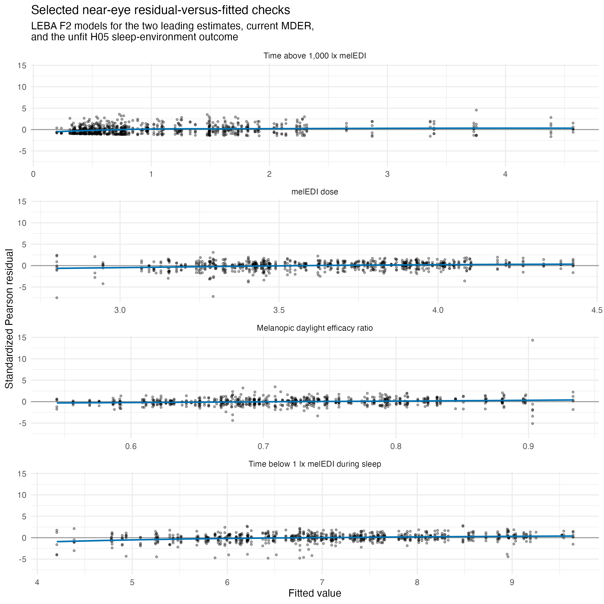
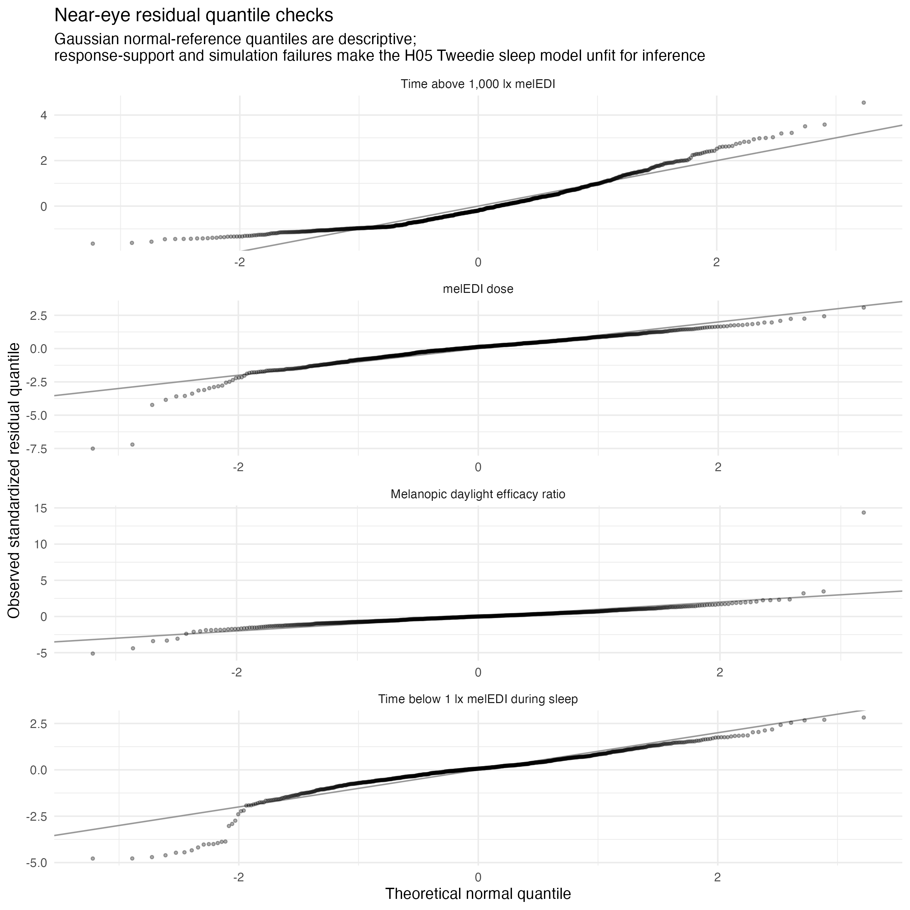

source("scripts/project.R")
analysis_setup()
source("scripts/pipeline/paths_io.R")
source("scripts/pipeline/p_value_display.R")
source("scripts/hypotheses/H05/h05_contract.R")
source("scripts/hypotheses/H05/h05_modeling.R")
root <- normalizePath(Sys.getenv("QUARTO_PROJECT_DIR", unset = getwd()))
producer <- "analyses/H05-habitual-behaviour.qmd"
options(stringsAsFactors = FALSE, scipen = 999, dplyr.summarise.inform = FALSE)
roots <- list(model_data = file.path(root,"results/intermediate/model_data/H05"), models = file.path(root,"results/models/H05"), diagnostics = file.path(root,"results/csv/diagnostics/H05"), tables = file.path(root,"results/tables/H05"), figures = file.path(root,"results/images/H05"), source_data = file.path(root,"results/csv/source_data/H05"))
invisible(lapply(roots, dir.create, recursive=TRUE, showWarnings=FALSE))
metadata <- list()
source("scripts/pipeline/multiplicity.R")
source("scripts/hypotheses/H01/h01_contract.R")
source("scripts/hypotheses/H01/h01_modeling.R")
h05_write_csv <- function(data, path) {
write_csv_artifact(data, path, producer = producer)
invisible(path)
}
h05_write_rds <- function(object, path) {
write_rds_artifact(object, path, producer = producer)
invisible(path)
}
run_loo <- TRUEH05: Habitual light-related behaviour and personal light exposure
This analysis estimates associations between four habitual light-related behaviour scores and 17 personal light-exposure metrics. Models account for site, and daily outcomes account for repeated measurements within participants.
Data and model guide
The questionnaire preparation reconstructs the four LEBA factor scores from complete item sums. F2 includes one reverse-coded item; the other factors retain their recorded item directions. Scores are centred and scaled using participants in the exact fitted sample, not within each site. The metric datasets provide 17 outcomes and their availability rules. Unsupported values are not zeros.
For each factor and metric, a site-adjusted model is compared with the model that adds the centred factor score. Site is a fixed adjustment with sum contrasts. Participant-day models include a participant random intercept; participant-level stability and variability models do not. Response families and transforms are metric-specific. Likelihood-ratio tests use a common fitted sample and likelihood basis; final coefficients have model-based Wald intervals. Effects are expressed per participant-level factor SD as ratios, odds ratios, hour differences or other stated metric units.
Each declared FDR family contains all 17 metrics by four factors, including non-retained tests. Model adequacy and permission to interpret a result are distinct: the four sleep-environment cells are explicitly unfit for inference and their estimates and p-values are suppressed in the reader tables. The analysis evaluates random-site models, remaining-gap timing, matched placements, alternative metric definitions and influential participants/sites. MDER upper-tail checks and the numerical-zero treatment of the darkest 10-hour mean are explained with their results.
The executable sections below write fitted objects to results/models/H05/, reader tables to results/tables/H05/, and the supporting numerical and figure outputs under results/. Start with the calculations below or jump to findings and interpretation.
Setup
Shared H01 helpers supply the common response transformations and model diagnostics. H05 helpers specify complete questionnaire-factor scoring, participant-level centering, fitted formulas and contrasts.
Load metric and questionnaire inputs
Use the current definitions of all 17 metrics and the alternative preprocessing baseline. Questionnaire factors require complete ordered-item scores; any reverse-coded item is checked before summing.
input_contract <- h05_input_contract(root)
objects <- list(
main = readRDS(input_contract$main$path),
alternative_preprocessing = readRDS(
input_contract$alternative_preprocessing$path
)
)
leba <- readRDS(input_contract$leba$path)
h01_fit_results <- readRDS(
input_contract$h01_fit_results_site_evidence$path
)
site_registry <- readr::read_csv(
file.path(root, "config/site_display_registry.csv"),
show_col_types = FALSE
) |>
dplyr::arrange(.data$display_order)
site_levels <- site_registry$site
factor_registry <- h05_factor_registry()
metric_registry <- h05_metric_registry(objects$main$metric_contract)
run_registry <- h05_run_registry()
h05_validate_contract(metric_registry, factor_registry, run_registry)
leba_audit <- h05_verified_leba(leba, factor_registry)
metric_contract_comparison <- tibble::tibble(
field = intersect(
names(objects$main$metric_contract),
names(objects$alternative_preprocessing$metric_contract)
)
) |>
dplyr::rowwise() |>
dplyr::mutate(
identical = isTRUE(all.equal(
objects$main$metric_contract[[.data$field]],
objects$alternative_preprocessing$metric_contract[[.data$field]],
check.attributes = TRUE
)),
differing_rows = paste(
which(
objects$main$metric_contract[[.data$field]] !=
objects$alternative_preprocessing$metric_contract[[.data$field]] |
xor(
is.na(objects$main$metric_contract[[.data$field]]),
is.na(
objects$alternative_preprocessing$metric_contract[[.data$field]]
)
)
),
collapse = ","
)
) |>
dplyr::ungroup()
core_metric_fields <- c(
"metric_order",
"metric_id",
"analysis_unit",
"source_field",
"source_unit",
"manuscript_name",
"manuscript_category",
"display_unit"
)
if (
any(
!metric_contract_comparison$identical[
metric_contract_comparison$field %in% core_metric_fields
]
)
) {
h05_abort("Main and alternative-preprocessing core H05 metric contracts differ")
}
h05_write_csv(
factor_registry,
file.path(roots$model_data, "H05_factor_registry.csv")
)
h05_write_csv(
metric_registry,
file.path(roots$model_data, "H05_metric_registry.csv")
)
h05_write_csv(
run_registry,
file.path(roots$model_data, "H05_run_registry.csv")
)
h05_write_csv(
leba_audit,
file.path(roots$diagnostics, "H05_leba_score_audit.csv")
)
h01_fixed_site_evidence <- h01_fit_results$diagnostics |>
dplyr::filter(.data$run_id == "main__glasses__all_available")
h01_random_site_evidence <- h01_fit_results$random_site |>
dplyr::filter(.data$run_id == "main__glasses__all_available")
h05_site_structure_evidence <- tibble::tibble(
evidence_source = "H01 main near-eye all-available fits",
fixed_site_metrics = nrow(h01_fixed_site_evidence),
fixed_site_converged = sum(h01_fixed_site_evidence$converged %in% TRUE),
fixed_site_positive_definite_hessian = sum(
h01_fixed_site_evidence$positive_definite_hessian %in% TRUE
),
fixed_site_singular = sum(h01_fixed_site_evidence$singular %in% TRUE),
fixed_site_pass = sum(
h01_fixed_site_evidence$diagnostic_status == "PASS"
),
fixed_site_warn_review = sum(
h01_fixed_site_evidence$diagnostic_status == "WARN_REVIEW"
),
random_site_descriptive_pass = sum(
h01_random_site_evidence$status == "DESCRIPTIVE_PASS"
),
random_site_descriptive_unstable = sum(
h01_random_site_evidence$status == "DESCRIPTIVE_UNSTABLE"
),
random_site_non_estimable = sum(
h01_random_site_evidence$status == "NON_ESTIMABLE"
),
random_site_singular = sum(
h01_random_site_evidence$random_site_singular %in% TRUE
),
author_resolution = paste0(
"fixed site primary with sum contrasts; registered random site retained ",
"as a sensitivity"
)
)
h05_write_csv(
h05_site_structure_evidence,
file.path(roots$model_data, "H05_site_structure_evidence.csv")
)
h05_write_csv(
metric_contract_comparison,
file.path(roots$model_data, "H05_input_metric_contract_comparison.csv")
)
formula_registry <- tidyr::crossing(
analysis_unit = c("participant", "participant_day"),
formula_id = c("fixed_full", "fixed_reduced", "random_site")
) |>
dplyr::rowwise() |>
dplyr::mutate(
formula = paste(
deparse(h05_formula_set(.data$analysis_unit)[[.data$formula_id]]),
collapse = " "
)
) |>
dplyr::ungroup()
h05_write_csv(
formula_registry,
file.path(roots$model_data, "H05_formula_registry.csv")
)
h05_identity <- function(run, spec, factor_row) {
tibble::tibble(
run_id = run$run_id,
data_scenario_id = run$data_scenario_id,
placement = run$placement,
sample_scenario = run$sample_scenario,
analytical_role = run$analytical_role,
family_id = run$family_id,
inferential_family = run$inferential_family,
family_n = run$family_n,
metric_order = spec$metric_order,
metric_id = spec$metric_id,
manuscript_name = spec$manuscript_name,
analysis_unit = spec$analysis_unit,
response_family = spec$response_family,
response_transform = spec$response_transform,
effect_scale = spec$effect_scale,
factor_order = factor_row$factor_order,
factor_id = factor_row$factor_id,
factor_label = factor_row$factor_label
)
}
h05_bind_identity <- function(identity, data) {
if (nrow(data) == 0L) {
return(data)
}
dplyr::bind_cols(identity[rep(1L, nrow(data)), , drop = FALSE], data)
}
factor_registry# A tibble: 4 × 11
factor_order factor_id factor_label direction_text first_item last_item
<int> <chr> <chr> <chr> <int> <int>
1 1 leba_f2 Spending time outd… Higher scores… 4 9
2 2 leba_f3 Using phones and s… Higher scores… 10 14
3 3 leba_f4 Controlling and us… Higher scores… 15 18
4 4 leba_f5 Using light in the… Higher scores… 19 23
# ℹ 5 more variables: reverse_item <chr>, possible_min <int>,
# possible_max <int>, score_rule <chr>, missing_item_rule <chr>metric_registry# A tibble: 17 × 17
metric_order analysis_unit response_family response_transform effect_scale
<int> <chr> <chr> <chr> <chr>
1 1 participant gaussian logit odds_ratio
2 2 participant gaussian identity difference
3 3 participant_day gaussian log10_offset_0.1 ratio
4 4 participant_day gaussian log10_offset_0.1 ratio
5 5 participant_day gaussian log10_offset_0.1 ratio
6 6 participant_day tweedie_log identity ratio
7 7 participant_day tweedie_log identity ratio
8 8 participant_day gaussian identity difference
9 9 participant_day tweedie_log identity ratio
10 10 participant_day gaussian log10_offset_0.1 ratio
11 11 participant_day gaussian clock_hours difference
12 12 participant_day gaussian clock_hours_midnig… difference
13 13 participant_day gaussian clock_hours difference
14 14 participant_day gaussian clock_hours difference
15 15 participant_day gaussian clock_hours difference
16 16 participant_day gaussian log10_offset_0.1 ratio
17 17 participant_day gaussian identity difference
# ℹ 12 more variables: preregistered_photoperiod <lgl>, lower_bound <dbl>,
# upper_bound <dbl>, audit_upper_threshold <dbl>, diagnostic_note <chr>,
# metric_id <chr>, manuscript_name <chr>, abbreviation <chr>,
# manuscript_category <chr>, display_unit <chr>, variant_label <chr>,
# value_definition <chr>Fit the complete model and sensitivity families
Fit every run, metric and behaviour-factor combination using the declared response family. The same loop computes model diagnostics, random-site sensitivities, leave-one-site-out estimates, descriptive participant-level correlations and the exactly identified longest-period sensitivity. The alternative preparation and sensor-matched samples retain their own analytical denominators.
results <- list(
effects = list(),
tests = list(),
diagnostics = list(),
samples = list(),
fit_index = list(),
random_site = list(),
loo = list(),
influence = list(),
spearman = list(),
site_spearman = list(),
loo_spearman = list(),
diagnostic_plot_data = list(),
exact_bout = list()
)
result_index <- stats::setNames(rep(1L, length(results)), names(results))
add_result <- function(name, value) {
if (nrow(value) == 0L) {
return(invisible(NULL))
}
results[[name]][[result_index[[name]]]] <<- value
result_index[[name]] <<- result_index[[name]] + 1L
invisible(NULL)
}
model_frames <- list()
prepared_cache <- list()
factor_cache <- list()
bundle_cache <- list()
inferential_models <- list()
for (run_index in seq_len(nrow(run_registry))) {
run <- run_registry[run_index, , drop = FALSE]
object <- objects[[run$data_scenario_id]]
message("H05 run ", run_index, "/8: ", run$run_id)
for (metric_index in seq_len(nrow(metric_registry))) {
spec <- metric_registry[metric_index, , drop = FALSE]
message(" metric ", spec$metric_order, "/17: ", spec$metric_id)
prepared <- h05_prepare_metric_rows(
object,
spec,
placement = run$placement,
sample_scenario = run$sample_scenario,
leba = leba,
site_levels = site_levels
)
if (spec$metric_id == "mder_mean_of_viable_ratios") prepared_cache[[run$run_id]] <- prepared
frame_key <- paste(run$run_id, spec$metric_id, sep = "::")
model_frames[[frame_key]] <- prepared$rows |>
dplyr::select(
.data$.model_row_id,
.data$site,
.data$Id,
.data$participant_key,
.data$local_date,
.data$participant_days_contributing,
.data$value,
.data$metric_support_available,
.data$metric_support_valid_minutes,
.data$metric_support_expected_minutes,
.data$metric_any_censored,
dplyr::all_of(factor_registry$factor_id)
)
for (factor_index in seq_len(nrow(factor_registry))) {
factor_row <- factor_registry[factor_index, , drop = FALSE]
identity <- h05_identity(run, spec, factor_row)
factor_frame <- h05_add_factor_to_frame(
prepared$rows,
spec,
factor_row
)
frame <- factor_frame$frame
sample_row <- dplyr::bind_cols(
prepared$base_flow,
factor_frame$scaling
)
add_result("samples", h05_bind_identity(identity, sample_row))
if (nrow(frame) == 0L) {
empty_bundle <- list(
spec = spec,
formulas = h05_formula_set(spec$analysis_unit),
inferential = run$inferential_family,
comparison_full = list(
model = NULL,
warnings = character(),
error = "No estimable rows"
),
comparison_reduced = list(
model = NULL,
warnings = character(),
error = "No estimable rows"
),
final = list(
model = NULL,
warnings = character(),
error = "No estimable rows"
)
)
add_result("effects", h05_bind_identity(identity, h05_empty_effect()))
add_result(
"tests",
h05_bind_identity(identity, h05_lrt_summary(empty_bundle))
)
add_result(
"fit_index",
h05_bind_identity(identity, h05_fit_index_rows(empty_bundle))
)
next
}
bundle <- h05_fit_bundle(
frame,
spec,
inferential = run$inferential_family
)
if (spec$metric_id == "mder_mean_of_viable_ratios") {
cache_key <- paste(run$run_id, factor_row$factor_id, sep="::")
factor_cache[[cache_key]] <- factor_frame
bundle_cache[[cache_key]] <- bundle
}
effect <- h05_effect_summary(
bundle$final$model,
spec,
factor_frame$scaling$leba_participant_sd
)
test <- h05_lrt_summary(bundle)
diagnostic_seed <- as.integer(
500000L + run_index * 10000L + metric_index * 100L + factor_index
)
diagnostics <- h05_diagnostic_summary(
bundle,
frame,
seed = diagnostic_seed
)
fit_index <- h05_fit_index_rows(bundle)
participant_summary <- h05_participant_summary(frame, spec)
spearman <- h05_spearman_summary(participant_summary)
influence <- h05_influence_candidates(
bundle$final$model,
frame,
n = 3L
)
add_result("effects", h05_bind_identity(identity, effect))
add_result("tests", h05_bind_identity(identity, test))
add_result("diagnostics", h05_bind_identity(identity, diagnostics))
add_result(
"fit_index",
h05_bind_identity(identity, fit_index)
)
add_result("spearman", h05_bind_identity(identity, spearman))
add_result("influence", h05_bind_identity(identity, influence))
if (run$inferential_family) {
model_key <- paste(
run$run_id,
spec$metric_id,
factor_row$factor_id,
sep = "::"
)
inferential_models[[model_key]] <- bundle
}
main_all_available <-
run$data_scenario_id == "main" &&
run$sample_scenario == "all_available"
if (main_all_available) {
random_site <- h05_random_site_summary(
frame,
spec,
factor_frame$scaling$leba_participant_sd
)
add_result(
"random_site",
h05_bind_identity(identity, random_site)
)
add_result(
"site_spearman",
h05_bind_identity(
identity,
h05_site_stratified_spearman(participant_summary)
)
)
add_result(
"loo_spearman",
h05_bind_identity(
identity,
h05_leave_one_site_out_spearman(participant_summary)
)
)
}
primary_run <-
run$data_scenario_id == "main" &&
run$placement == "glasses" &&
run$sample_scenario == "all_available"
if (primary_run) {
if (run_loo) {
loo <- h05_leave_one_site_out(
frame,
spec,
factor_frame$scaling$leba_participant_sd,
full_estimate = effect$estimate_model_per_point
)
add_result("loo", h05_bind_identity(identity, loo))
}
plot_data <- h01_diagnostic_plot_data(bundle$final$model, frame)
add_result(
"diagnostic_plot_data",
h05_bind_identity(identity, plot_data)
)
if (spec$metric_id == "longest_bout_above_250") {
exact_rows <- prepared$rows[
!is.na(prepared$rows$metric_any_censored) &
!prepared$rows$metric_any_censored,
,
drop = FALSE
]
exact_factor_frame <- h05_add_factor_to_frame(
exact_rows,
spec,
factor_row
)
exact_frame <- exact_factor_frame$frame
exact_bundle <- h05_fit_bundle(
exact_frame,
spec,
inferential = FALSE
)
exact_effect <- h05_effect_summary(
exact_bundle$final$model,
spec,
exact_factor_frame$scaling$leba_participant_sd
)
exact_diagnostics <- h05_diagnostic_summary(
exact_bundle,
exact_frame,
seed = diagnostic_seed + 900000L
)
exact_sample <- tibble::tibble(
sensitivity_id = "longest_bout_exactly_identified_only",
observations = nrow(exact_frame),
participants = dplyr::n_distinct(exact_frame$participant_key),
participant_days = nrow(exact_frame),
sites = nlevels(exact_frame$site),
leba_participant_mean = exact_factor_frame$scaling$leba_participant_mean,
leba_participant_sd = exact_factor_frame$scaling$leba_participant_sd
)
add_result(
"exact_bout",
h05_bind_identity(
identity,
dplyr::bind_cols(
exact_sample,
exact_effect,
exact_diagnostics
)
)
)
}
}
}
}
}
results <- lapply(results, dplyr::bind_rows)
effects <- results$effects
tests <- results$tests
diagnostics <- results$diagnostics
samples <- results$samples
samples# A tibble: 544 × 30
run_id data_scenario_id placement sample_scenario analytical_role family_id
<chr> <chr> <chr> <chr> <chr> <chr>
1 alterna… alternative_pre… chest all_available supporting_sen… <NA>
2 alterna… alternative_pre… chest all_available supporting_sen… <NA>
3 alterna… alternative_pre… chest all_available supporting_sen… <NA>
4 alterna… alternative_pre… chest all_available supporting_sen… <NA>
5 alterna… alternative_pre… chest all_available supporting_sen… <NA>
6 alterna… alternative_pre… chest all_available supporting_sen… <NA>
7 alterna… alternative_pre… chest all_available supporting_sen… <NA>
8 alterna… alternative_pre… chest all_available supporting_sen… <NA>
9 alterna… alternative_pre… chest all_available supporting_sen… <NA>
10 alterna… alternative_pre… chest all_available supporting_sen… <NA>
# ℹ 534 more rows
# ℹ 24 more variables: inferential_family <lgl>, family_n <int>,
# metric_order <int>, metric_id <chr>, manuscript_name <chr>,
# analysis_unit <chr>, response_family <chr>, response_transform <chr>,
# effect_scale <chr>, factor_order <int>, factor_id <chr>,
# factor_label <chr>, source_rows <int>, eligible_metric_rows <int>,
# missing_leba_rows <int>, observations <int>, participants <int>, …diagnostics# A tibble: 544 × 61
run_id data_scenario_id placement sample_scenario analytical_role family_id
<chr> <chr> <chr> <chr> <chr> <chr>
1 alterna… alternative_pre… chest all_available supporting_sen… <NA>
2 alterna… alternative_pre… chest all_available supporting_sen… <NA>
3 alterna… alternative_pre… chest all_available supporting_sen… <NA>
4 alterna… alternative_pre… chest all_available supporting_sen… <NA>
5 alterna… alternative_pre… chest all_available supporting_sen… <NA>
6 alterna… alternative_pre… chest all_available supporting_sen… <NA>
7 alterna… alternative_pre… chest all_available supporting_sen… <NA>
8 alterna… alternative_pre… chest all_available supporting_sen… <NA>
9 alterna… alternative_pre… chest all_available supporting_sen… <NA>
10 alterna… alternative_pre… chest all_available supporting_sen… <NA>
# ℹ 534 more rows
# ℹ 55 more variables: inferential_family <lgl>, family_n <int>,
# metric_order <int>, metric_id <chr>, manuscript_name <chr>,
# analysis_unit <chr>, response_family <chr>, response_transform <chr>,
# effect_scale <chr>, factor_order <int>, factor_id <chr>,
# factor_label <chr>, converged <lgl>, positive_definite_hessian <lgl>,
# singular <lgl>, max_gradient <dbl>, timing_min_hour <dbl>, …Control multiplicity and compare estimates
Adjust the registered 68-test families with the Benjamini-Hochberg procedure. Join tests, effect estimates and fitted samples, then compare sensor positions and preprocessing on their declared scales.
if (
nrow(effects) != 544L ||
nrow(tests) != 544L ||
nrow(diagnostics) != 544L ||
nrow(samples) != 544L
) {
h05_abort("H05 did not produce one core result per 8 x 17 x 4 cell")
}
inferential_tests <- tests |>
dplyr::filter(.data$inferential_family) |>
dplyr::mutate(family_instance_id = .data$family_id)
inferential_tests <- adjust_result_families(
inferential_tests,
family_col = "family_instance_id",
p_col = "p_raw",
family_n_col = "family_n",
output_col = "p_adjusted",
method = "BH"
) |>
dplyr::group_by(.data$family_instance_id) |>
dplyr::mutate(
family_observed_tests = sum(!is.na(.data$p_raw)),
family_rank = ifelse(
is.na(.data$p_raw),
NA_integer_,
rank(.data$p_raw, ties.method = "min", na.last = "keep")
)
) |>
dplyr::ungroup()
noninferential_tests <- tests |>
dplyr::filter(!.data$inferential_family) |>
dplyr::mutate(
family_instance_id = NA_character_,
p_adjusted = NA_real_,
family_observed_tests = NA_integer_,
family_rank = NA_integer_
)
tests <- dplyr::bind_rows(inferential_tests, noninferential_tests) |>
dplyr::arrange(
.data$data_scenario_id,
.data$placement,
.data$sample_scenario,
.data$metric_order,
.data$factor_order
)
family_audit <- tests |>
dplyr::filter(.data$inferential_family) |>
dplyr::group_by(.data$family_id) |>
dplyr::summarise(
planned_tests = dplyr::first(.data$family_n),
registry_rows = dplyr::n(),
observed_tests = sum(!is.na(.data$p_raw)),
estimable_adjusted_tests = sum(!is.na(.data$p_adjusted)),
passes_bh_0_05 = sum(.data$p_adjusted <= 0.05, na.rm = TRUE),
vector_bh_verified = all.equal(
.data$p_adjusted,
adjust_p_family(.data$p_raw, method = "BH", n = 68L),
tolerance = 1e-14
) ==
TRUE,
.groups = "drop"
)
if (
nrow(family_audit) != 3L ||
any(family_audit$registry_rows != 68L) ||
any(!family_audit$vector_bh_verified)
) {
h05_abort("H05 multiplicity families fail the complete-vector audit")
}
master <- effects |>
dplyr::left_join(
tests |>
dplyr::select(
.data$run_id,
.data$metric_id,
.data$factor_id,
.data$statistic,
.data$df,
.data$p_raw,
.data$p_adjusted,
.data$family_rank,
.data$family_observed_tests,
.data$comparison_status
),
by = c("run_id", "metric_id", "factor_id"),
relationship = "one-to-one"
) |>
dplyr::left_join(
diagnostics |>
dplyr::select(
.data$run_id,
.data$metric_id,
.data$factor_id,
.data$diagnostic_status,
.data$model_adequacy,
.data$specified_limitations
),
by = c("run_id", "metric_id", "factor_id"),
relationship = "one-to-one"
) |>
dplyr::left_join(
samples |>
dplyr::select(
.data$run_id,
.data$metric_id,
.data$factor_id,
.data$observations,
.data$participants,
.data$participant_days,
.data$represented_days,
.data$sites,
.data$leba_participant_mean,
.data$leba_participant_sd
),
by = c("run_id", "metric_id", "factor_id"),
relationship = "one-to-one"
)
random_site <- results$random_site |>
dplyr::left_join(
effects |>
dplyr::select(
.data$run_id,
.data$metric_id,
.data$factor_id,
fixed_estimate_model_per_point = .data$estimate_model_per_point
),
by = c("run_id", "metric_id", "factor_id"),
relationship = "many-to-one"
) |>
dplyr::mutate(
estimate_change_random_minus_fixed = .data$estimate_model_per_point -
.data$fixed_estimate_model_per_point,
sign_concordant = dplyr::if_else(
is.finite(.data$estimate_model_per_point) &
is.finite(.data$fixed_estimate_model_per_point) &
.data$fixed_estimate_model_per_point != 0,
sign(.data$estimate_model_per_point) ==
sign(.data$fixed_estimate_model_per_point),
NA
),
relative_absolute_change = dplyr::if_else(
is.finite(.data$fixed_estimate_model_per_point) &
abs(.data$fixed_estimate_model_per_point) > 1e-12,
abs(
.data$estimate_change_random_minus_fixed /
.data$fixed_estimate_model_per_point
),
NA_real_
),
stability_class = dplyr::case_when(
.data$random_site_status != "DESCRIPTIVE_PASS" ~ "fit_unstable",
.data$sign_concordant %in% FALSE ~ "direction_unstable",
is.finite(.data$relative_absolute_change) &
.data$relative_absolute_change > 0.5 ~
"direction_stable_magnitude_sensitive",
TRUE ~ "stable"
)
)
loo_summary <- if (nrow(results$loo) > 0L) {
results$loo |>
dplyr::group_by(
.data$run_id,
.data$metric_order,
.data$metric_id,
.data$manuscript_name,
.data$factor_order,
.data$factor_id,
.data$factor_label
) |>
dplyr::summarise(
omitted_sites = dplyr::n(),
successful_refits = sum(.data$refit_status == "PASS"),
sign_reversal_sites = sum(.data$sign_reversal %in% TRUE, na.rm = TRUE),
maximum_relative_absolute_change = max(
.data$relative_absolute_change,
na.rm = TRUE
),
minimum_estimate = min(.data$estimate_model_per_point, na.rm = TRUE),
maximum_estimate = max(.data$estimate_model_per_point, na.rm = TRUE),
stability_class = dplyr::case_when(
successful_refits < omitted_sites ~ "fit_unstable",
sign_reversal_sites > 0L ~ "direction_unstable",
is.finite(maximum_relative_absolute_change) &
maximum_relative_absolute_change > 0.5 ~
"direction_stable_magnitude_sensitive",
TRUE ~ "stable"
),
.groups = "drop"
)
} else {
tibble::tibble()
}
paired_effects <- effects |>
dplyr::filter(
.data$data_scenario_id == "main",
.data$sample_scenario == "paired_common_sample"
) |>
dplyr::select(
.data$placement,
.data$metric_order,
.data$metric_id,
.data$manuscript_name,
.data$factor_order,
.data$factor_id,
.data$factor_label,
.data$effect_type,
.data$estimate_model_per_sd,
.data$conf_low_model_per_sd,
.data$conf_high_model_per_sd,
.data$estimate_practical_per_sd,
.data$conf_low_practical_per_sd,
.data$conf_high_practical_per_sd
) |>
tidyr::pivot_wider(
names_from = .data$placement,
values_from = c(
.data$effect_type,
.data$estimate_model_per_sd,
.data$conf_low_model_per_sd,
.data$conf_high_model_per_sd,
.data$estimate_practical_per_sd,
.data$conf_low_practical_per_sd,
.data$conf_high_practical_per_sd
),
names_sep = "__"
) |>
dplyr::mutate(
estimate_difference_chest_minus_near_eye = .data$estimate_model_per_sd__chest -
.data$estimate_model_per_sd__glasses,
sign_concordant = dplyr::if_else(
is.finite(.data$estimate_model_per_sd__chest) &
is.finite(.data$estimate_model_per_sd__glasses),
sign(.data$estimate_model_per_sd__chest) ==
sign(.data$estimate_model_per_sd__glasses),
NA
),
component_intervals_overlap = .data$conf_low_model_per_sd__chest <=
.data$conf_high_model_per_sd__glasses &
.data$conf_low_model_per_sd__glasses <=
.data$conf_high_model_per_sd__chest,
stability_class = dplyr::case_when(
.data$sign_concordant %in% FALSE ~ "direction_differs",
.data$component_intervals_overlap %in% FALSE ~
"direction_same_component_intervals_separated",
TRUE ~ "direction_and_component_intervals_compatible"
),
difference_interval_status = paste0(
"Not estimated: confidence intervals describe each placement separately; ",
"no interval for the paired placement difference is calculated"
)
)
mpd_comparison <- effects |>
dplyr::filter(
.data$placement == "glasses",
.data$sample_scenario == "all_available",
.data$data_scenario_id %in% c("main", "alternative_preprocessing")
) |>
dplyr::select(
.data$data_scenario_id,
.data$metric_order,
.data$metric_id,
.data$manuscript_name,
.data$factor_order,
.data$factor_id,
.data$factor_label,
.data$estimate_model_per_sd,
.data$conf_low_model_per_sd,
.data$conf_high_model_per_sd
) |>
tidyr::pivot_wider(
names_from = .data$data_scenario_id,
values_from = c(
.data$estimate_model_per_sd,
.data$conf_low_model_per_sd,
.data$conf_high_model_per_sd
),
names_sep = "__"
) |>
dplyr::mutate(
estimate_difference_mpd_minus_main = .data$estimate_model_per_sd__alternative_preprocessing -
.data$estimate_model_per_sd__main,
sign_concordant = sign(
.data$estimate_model_per_sd__alternative_preprocessing
) ==
sign(.data$estimate_model_per_sd__main),
component_intervals_overlap = .data$conf_low_model_per_sd__alternative_preprocessing <=
.data$conf_high_model_per_sd__main &
.data$conf_low_model_per_sd__main <=
.data$conf_high_model_per_sd__alternative_preprocessing
)
exact_bout <- results$exact_bout |>
dplyr::left_join(
effects |>
dplyr::filter(
.data$run_id == "main__glasses__all_available",
.data$metric_id == "longest_bout_above_250"
) |>
dplyr::select(
.data$factor_id,
all_available_estimate_model_per_sd = .data$estimate_model_per_sd,
all_available_estimate_practical_per_sd = .data$estimate_practical_per_sd
),
by = "factor_id",
relationship = "one-to-one"
) |>
dplyr::mutate(
estimate_change_exact_minus_all_model_scale = .data$estimate_model_per_sd -
.data$all_available_estimate_model_per_sd,
sign_concordant = sign(.data$estimate_model_per_sd) ==
sign(.data$all_available_estimate_model_per_sd)
)
primary_master <- master |>
dplyr::filter(
.data$data_scenario_id == "main",
.data$placement == "glasses",
.data$sample_scenario == "all_available"
)
primary_highlights <- primary_master |>
dplyr::filter(.data$p_adjusted <= 0.05) |>
dplyr::arrange(.data$p_adjusted)
primary_highlights# A tibble: 0 × 53
# ℹ 53 variables: run_id <chr>, data_scenario_id <chr>, placement <chr>,
# sample_scenario <chr>, analytical_role <chr>, family_id <chr>,
# inferential_family <lgl>, family_n <int>, metric_order <int>,
# metric_id <chr>, manuscript_name <chr>, analysis_unit <chr>,
# response_family <chr>, response_transform <chr>, effect_scale <chr>,
# factor_order <int>, factor_id <chr>, factor_label <chr>,
# estimate_model_per_point <dbl>, std_error_model_per_point <dbl>, …Export model results
Save model frames, fitted objects, numerical estimates and diagnostic data for the manuscript and independent numerical inspection.
Export results
h05_write_rds(
list(
hypothesis_id = "H05",
status = "complete",
input_contract = input_contract,
factor_registry = factor_registry,
metric_registry = metric_registry,
run_registry = run_registry,
model_frames = model_frames,
metadata = list(
r_version = as.character(getRversion()),
participant_centering = paste0(
"mean and sample SD over unique participants in each exact ",
"run-metric-factor model frame"
),
primary_site_structure = "fixed_site_sum_contrasts",
random_site_role = "registered_sensitivity",
l10_noon_sensitivity = "not_in_analysis"
)
),
file.path(roots$model_data, "H05_model_frames.rds")
)
h05_write_rds(
inferential_models,
file.path(roots$models, "H05_inferential_model_objects.rds")
)
h05_write_csv(samples, file.path(roots$model_data, "H05_model_frame_index.csv"))
h05_write_csv(effects, file.path(roots$tables, "H05_model_effects.csv"))
h05_write_csv(tests, file.path(roots$tables, "H05_model_tests.csv"))
h05_write_csv(master, file.path(roots$tables, "H05_model_results_master.csv"))
h05_write_csv(family_audit, file.path(roots$tables, "H05_family_audit.csv"))
h05_write_csv(
primary_highlights,
file.path(roots$tables, "H05_primary_bh_highlights.csv")
)
h05_write_csv(
diagnostics,
file.path(roots$diagnostics, "H05_model_diagnostics.csv")
)
h05_write_csv(
results$fit_index,
file.path(roots$models, "H05_fit_index.csv")
)
h05_write_csv(
results$influence,
file.path(roots$diagnostics, "H05_participant_influence_screen.csv")
)
h05_write_csv(
random_site,
file.path(roots$tables, "H05_random_site_sensitivity.csv")
)
h05_write_csv(
results$loo,
file.path(roots$tables, "H05_leave_one_site_out_refits.csv")
)
h05_write_csv(
loo_summary,
file.path(roots$tables, "H05_leave_one_site_out_summary.csv")
)
h05_write_csv(
results$spearman,
file.path(roots$tables, "H05_descriptive_spearman.csv")
)
h05_write_csv(
results$site_spearman,
file.path(roots$diagnostics, "H05_site_stratified_spearman.csv")
)
h05_write_csv(
results$loo_spearman,
file.path(roots$diagnostics, "H05_leave_one_site_out_spearman.csv")
)
h05_write_csv(
paired_effects,
file.path(roots$tables, "H05_paired_placement_comparison.csv")
)
h05_write_csv(
mpd_comparison,
file.path(roots$tables, "H05_alternative_preprocessing_comparison.csv")
)
h05_write_csv(
exact_bout,
file.path(
roots$tables,
"H05_exactly_identified_longest_bout_sensitivity.csv"
)
)
h05_write_csv(
results$diagnostic_plot_data,
file.path(roots$source_data, "H05_primary_diagnostic_plot_data.csv")
)Check MDER upper tails and participant influence
Summarise the mean of viable minute-level spectral ratios using quartiles and an outer Tukey fence. This fence is a diagnostic screen, not an automatic exclusion. Repeat the model after deleting screened participants or participant-days on both the primary and alternative datasets.
spec <- dplyr::filter(metric_registry, .data$metric_id == "mder_mean_of_viable_ratios")
upper_tail_rows <- list()
upper_tail_summary <- list()
for (run_index in seq_len(nrow(run_registry))) {
run <- run_registry[run_index,,drop=FALSE]
prepared <- prepared_cache[[run$run_id]]
values <- prepared$rows$value
quantiles <- stats::quantile(
values,
probs = c(0, 0.25, 0.5, 0.75, 0.95, 0.99, 1),
names = FALSE,
type = 7
)
outer_fence <- quantiles[[4L]] + 3 * stats::IQR(values, type = 7)
summary_row <- tibble::tibble(
run_id = run$run_id,
data_scenario_id = run$data_scenario_id,
placement = run$placement,
sample_scenario = run$sample_scenario,
observations = length(values),
participants = dplyr::n_distinct(prepared$rows$participant_key),
sites = nlevels(prepared$rows$site),
minimum = quantiles[[1L]],
q1 = quantiles[[2L]],
median = quantiles[[3L]],
q3 = quantiles[[4L]],
p95 = quantiles[[5L]],
p99 = quantiles[[6L]],
maximum = quantiles[[7L]],
iqr = stats::IQR(values, type = 7),
tukey_outer_fence = outer_fence,
outer_tail_days = sum(values > outer_fence),
outer_tail_participants = dplyr::n_distinct(
prepared$rows$participant_key[values > outer_fence]
),
screening_role = paste0(
"Tukey Q3 + 3*IQR is a diagnostic screen only; no automatic exclusion"
)
)
upper_tail_summary[[run_index]] <- summary_row
upper_tail_rows[[run_index]] <- prepared$rows |>
dplyr::transmute(
run_id = run$run_id,
data_scenario_id = run$data_scenario_id,
placement = run$placement,
sample_scenario = run$sample_scenario,
participant_key = as.character(.data$participant_key),
site = as.character(.data$site),
Id = .data$Id,
local_date = .data$local_date,
mder = .data$value,
viable_minutes = .data$metric_support_valid_minutes,
expected_minutes = .data$metric_support_expected_minutes,
tukey_outer_fence = outer_fence,
outer_tail_flag = .data$value > outer_fence
) |>
dplyr::arrange(dplyr::desc(.data$mder)) |>
dplyr::mutate(upper_tail_rank = dplyr::row_number())
}
upper_tail_rows <- dplyr::bind_rows(upper_tail_rows)
upper_tail_summary <- dplyr::bind_rows(upper_tail_summary)
influence_refits <- list()
influence_index <- 1L
for (run_id in c(
"main__glasses__all_available",
"main__chest__all_available",
"alternative_preprocessing__glasses__all_available",
"alternative_preprocessing__chest__all_available"
)) {
prepared <- prepared_cache[[run_id]]
outer <- upper_tail_rows |>
dplyr::filter(.data$run_id == .env$run_id, .data$outer_tail_flag)
for (factor_index in seq_len(nrow(factor_registry))) {
factor_row <- factor_registry[factor_index, , drop = FALSE]
cache_key <- paste(run_id, factor_row$factor_id, sep = "::")
full_frame <- factor_cache[[cache_key]]$frame
full_effect <- h05_effect_summary(
bundle_cache[[cache_key]]$final$model,
spec,
factor_cache[[cache_key]]$scaling$leba_participant_sd
)
residual_candidates <- results$influence |>
dplyr::filter(.data$metric_id == "mder_mean_of_viable_ratios") |>
dplyr::filter(
.data$run_id == .env$run_id,
.data$factor_id == factor_row$factor_id
) |>
dplyr::transmute(
deletion_level = "participant",
candidate_id = .data$participant_key,
participant_key = .data$participant_key,
local_date = as.Date(NA),
candidate_reason = paste0(
"top_",
.data$screen_rank,
"_maximum_absolute_pearson_residual"
),
screen_score = .data$influence_score,
mder = NA_real_
)
outer_participants <- outer |>
dplyr::transmute(
deletion_level = "participant",
candidate_id = .data$participant_key,
participant_key = .data$participant_key,
local_date = as.Date(NA),
candidate_reason = "participant_with_Tukey_outer_tail_day",
screen_score = NA_real_,
mder = .data$mder
)
outer_days <- outer |>
dplyr::transmute(
deletion_level = "participant_day",
candidate_id = paste(.data$participant_key, .data$local_date, sep = "::"),
participant_key = .data$participant_key,
local_date = .data$local_date,
candidate_reason = "Tukey_outer_tail_day",
screen_score = NA_real_,
mder = .data$mder
)
candidates <- dplyr::bind_rows(
residual_candidates,
outer_participants,
outer_days
) |>
dplyr::group_by(.data$deletion_level, .data$candidate_id) |>
dplyr::summarise(
participant_key = dplyr::first(.data$participant_key),
local_date = dplyr::first(.data$local_date),
candidate_reason = paste(unique(.data$candidate_reason), collapse = ";"),
screen_score = suppressWarnings(max(.data$screen_score, na.rm = TRUE)),
mder = suppressWarnings(max(.data$mder, na.rm = TRUE)),
.groups = "drop"
) |>
dplyr::mutate(
screen_score = dplyr::if_else(
is.infinite(.data$screen_score),
NA_real_,
.data$screen_score
),
mder = dplyr::if_else(is.infinite(.data$mder), NA_real_, .data$mder)
)
for (candidate_index in seq_len(nrow(candidates))) {
candidate <- candidates[candidate_index, , drop = FALSE]
keep <- if (candidate$deletion_level == "participant") {
as.character(prepared$rows$participant_key) != candidate$participant_key
} else {
!(
as.character(prepared$rows$participant_key) ==
candidate$participant_key &
prepared$rows$local_date == candidate$local_date
)
}
sensitivity_factor <- h05_add_factor_to_frame(
prepared$rows[keep, , drop = FALSE],
spec,
factor_row
)
sensitivity_bundle <- h05_fit_bundle(
sensitivity_factor$frame,
spec,
inferential = FALSE
)
sensitivity_effect <- h05_effect_summary(
sensitivity_bundle$final$model,
spec,
sensitivity_factor$scaling$leba_participant_sd
)
change <- sensitivity_effect$estimate_model_per_point -
full_effect$estimate_model_per_point
influence_refits[[influence_index]] <- tibble::tibble(
run_id = run_id,
placement = if (grepl("glasses", run_id)) "glasses" else "chest",
factor_order = factor_row$factor_order,
factor_id = factor_row$factor_id,
factor_label = factor_row$factor_label,
deletion_level = candidate$deletion_level,
candidate_id = candidate$candidate_id,
participant_key = candidate$participant_key,
local_date = candidate$local_date,
candidate_reason = candidate$candidate_reason,
screen_score = candidate$screen_score,
screened_mder = candidate$mder,
observations_removed = nrow(full_frame) - nrow(sensitivity_factor$frame),
participants_removed = dplyr::n_distinct(full_frame$participant_key) -
dplyr::n_distinct(sensitivity_factor$frame$participant_key),
full_estimate_per_point = full_effect$estimate_model_per_point,
full_standard_error_per_point = full_effect$std_error_model_per_point,
full_estimate_per_sd = full_effect$estimate_model_per_sd,
sensitivity_estimate_per_point =
sensitivity_effect$estimate_model_per_point,
sensitivity_conf_low_per_point =
sensitivity_effect$conf_low_model_per_point,
sensitivity_conf_high_per_point =
sensitivity_effect$conf_high_model_per_point,
sensitivity_estimate_per_sd = sensitivity_effect$estimate_model_per_sd,
absolute_change_per_point = abs(change),
change_in_full_standard_errors = abs(change) /
full_effect$std_error_model_per_point,
sign_reversal = sign(sensitivity_effect$estimate_model_per_point) !=
sign(full_effect$estimate_model_per_point),
sensitivity_interval_contains_zero =
sensitivity_effect$conf_low_model_per_point <= 0 &
sensitivity_effect$conf_high_model_per_point >= 0,
refit_status = if (
!is.null(sensitivity_bundle$final$model) &&
isTRUE(h01_model_fit_status(
sensitivity_bundle$final$model
)$converged)
) {
"PASS"
} else {
"UNSTABLE_OR_NON_ESTIMABLE"
}
)
influence_index <- influence_index + 1L
}
}
}
influence_refits <- dplyr::bind_rows(influence_refits) |>
dplyr::arrange(
.data$placement,
.data$factor_order,
.data$deletion_level,
.data$candidate_id
)
if (nrow(influence_refits) == 0L || any(influence_refits$refit_status != "PASS")) {
stop("The current-estimand MDER influence refits did not all pass", call. = FALSE)
}
h05_write_csv(upper_tail_rows,file.path(roots$diagnostics,"H05_mder_upper_tail_rows.csv"))
h05_write_csv(upper_tail_summary,file.path(roots$diagnostics,"H05_mder_upper_tail_summary.csv"))
h05_write_csv(dplyr::filter(influence_refits,grepl("^main__",.data$run_id)),file.path(roots$diagnostics,"H05_mder_influence_refits.csv"))
h05_write_csv(dplyr::filter(influence_refits,!grepl("^main__",.data$run_id)),file.path(roots$diagnostics,"H05_mder_gap_influence_refits.csv"))
upper_tail_summary# A tibble: 8 × 19
run_id data_scenario_id placement sample_scenario observations participants
<chr> <chr> <chr> <chr> <int> <int>
1 alternat… alternative_pre… chest all_available 723 152
2 alternat… alternative_pre… chest paired_common_… 478 107
3 alternat… alternative_pre… glasses all_available 687 137
4 alternat… alternative_pre… glasses paired_common_… 478 107
5 main__ch… main chest all_available 732 152
6 main__ch… main chest paired_common_… 489 107
7 main__gl… main glasses all_available 702 137
8 main__gl… main glasses paired_common_… 489 107
# ℹ 13 more variables: sites <int>, minimum <dbl>, q1 <dbl>, median <dbl>,
# q3 <dbl>, p95 <dbl>, p99 <dbl>, maximum <dbl>, iqr <dbl>,
# tukey_outer_fence <dbl>, outer_tail_days <int>,
# outer_tail_participants <int>, screening_role <chr>Compare MDER across matched sensor placements in the alternative preprocessing
Compare the two placement-specific MDER associations on exactly matched participant-days. The component confidence intervals do not constitute an interval for the placement difference.
gap_id <- "alternative_preprocessing"
metric_id <- "mder_mean_of_viable_ratios"
gap_paired <- effects |>
dplyr::filter(
.data$data_scenario_id == .env$gap_id,
.data$sample_scenario == "paired_common_sample",
.data$metric_id == .env$metric_id
) |>
dplyr::select(
.data$placement,
.data$metric_order,
.data$metric_id,
.data$manuscript_name,
.data$factor_order,
.data$factor_id,
.data$factor_label,
.data$effect_type,
.data$estimate_model_per_sd,
.data$conf_low_model_per_sd,
.data$conf_high_model_per_sd,
.data$estimate_practical_per_sd,
.data$conf_low_practical_per_sd,
.data$conf_high_practical_per_sd
) |>
tidyr::pivot_wider(
names_from = .data$placement,
values_from = c(
.data$effect_type,
.data$estimate_model_per_sd,
.data$conf_low_model_per_sd,
.data$conf_high_model_per_sd,
.data$estimate_practical_per_sd,
.data$conf_low_practical_per_sd,
.data$conf_high_practical_per_sd
),
names_sep = "__"
) |>
dplyr::mutate(
estimate_difference_chest_minus_near_eye =
.data$estimate_model_per_sd__chest -
.data$estimate_model_per_sd__glasses,
sign_concordant = sign(.data$estimate_model_per_sd__chest) ==
sign(.data$estimate_model_per_sd__glasses),
component_intervals_overlap =
.data$conf_low_model_per_sd__chest <=
.data$conf_high_model_per_sd__glasses &
.data$conf_low_model_per_sd__glasses <=
.data$conf_high_model_per_sd__chest,
stability_class = dplyr::case_when(
.data$sign_concordant %in% FALSE ~ "direction_differs",
.data$component_intervals_overlap %in% FALSE ~
"direction_same_component_intervals_separated",
TRUE ~ "direction_and_component_intervals_compatible"
),
difference_interval_status = paste0(
"not estimated: component comparison only; no new model or ",
"resampling for the placement difference"
)
)
gap_samples <- results$samples |> dplyr::filter(.data$data_scenario_id == .env$gap_id, .data$metric_id == .env$metric_id) |>
dplyr::filter(.data$sample_scenario == "paired_common_sample") |>
dplyr::select(
.data$placement,
.data$metric_id,
.data$factor_id,
.data$observations,
.data$participants,
.data$participant_days,
.data$represented_days,
.data$sites
) |>
tidyr::pivot_wider(
names_from = .data$placement,
values_from = c(
.data$observations,
.data$participants,
.data$participant_days,
.data$represented_days,
.data$sites
),
names_sep = "__"
)
gap_paired <- gap_paired |>
dplyr::left_join(
gap_samples,
by = c("metric_id", "factor_id"),
relationship = "one-to-one"
) |>
dplyr::mutate(
exact_sample_match =
.data$observations__glasses == .data$observations__chest &
.data$participants__glasses == .data$participants__chest &
.data$participant_days__glasses == .data$participant_days__chest &
.data$sites__glasses == .data$sites__chest,
comparison_scope = paste0(
"Matched MDER estimands in the gap-timing-unaware dataset; near eye ",
"and chest components only; closeness does not establish equivalence"
)
) |>
dplyr::arrange(.data$factor_order)
h05_write_csv(gap_paired,file.path(roots$tables,"H05_mder_gap_paired_placement_comparison.csv"))
h05_write_csv(gap_paired,file.path(roots$source_data,"H05_mder_gap_paired_placement_comparison.csv"))
gap_paired# A tibble: 4 × 37
metric_order metric_id manuscript_name factor_order factor_id factor_label
<int> <chr> <chr> <int> <chr> <chr>
1 17 mder_mean_of… Melanopic dayl… 1 leba_f2 Spending ti…
2 17 mder_mean_of… Melanopic dayl… 2 leba_f3 Using phone…
3 17 mder_mean_of… Melanopic dayl… 3 leba_f4 Controlling…
4 17 mder_mean_of… Melanopic dayl… 4 leba_f5 Using light…
# ℹ 31 more variables: effect_type__chest <chr>, effect_type__glasses <chr>,
# estimate_model_per_sd__chest <dbl>, estimate_model_per_sd__glasses <dbl>,
# conf_low_model_per_sd__chest <dbl>, conf_low_model_per_sd__glasses <dbl>,
# conf_high_model_per_sd__chest <dbl>, conf_high_model_per_sd__glasses <dbl>,
# estimate_practical_per_sd__chest <dbl>,
# estimate_practical_per_sd__glasses <dbl>,
# conf_low_practical_per_sd__chest <dbl>, …Create paired and primary displays
Plot estimates and diagnostic status from the complete current 17-metric families. Exact plotted data are exported alongside every figure.
Export results
suppressPackageStartupMessages({
library(dplyr)
library(ggplot2)
library(readr)
library(scales)
library(stringr)
library(tidyr)
})
read_h05 <- function(path) {
readr::read_csv(file.path(root, path), show_col_types = FALSE, na = "")
}
write_h05 <- function(data, path) {
invisible(write_csv_artifact(
data,
file.path(root, path),
producer = producer
))
}
required_inputs <- c(
"results/tables/H05/H05_model_results_master.csv",
"results/tables/H05/H05_paired_placement_comparison.csv"
)
master <- read_h05(required_inputs[[1L]])
paired_effects <- read_h05(required_inputs[[2L]])
primary_master <- master |>
filter(.data$run_id == "main__glasses__all_available")
if (nrow(primary_master) != 68L || nrow(paired_effects) != 68L) {
stop("The H05 display inputs are incomplete", call. = FALSE)
}
primary_figure_data <- primary_master |>
mutate(
metric_display = factor(
.data$manuscript_name,
levels = rev(unique(
.data$manuscript_name[order(.data$metric_order)]
))
),
factor_display = paste0(
str_to_upper(str_remove(.data$factor_id, "leba_")),
": ",
.data$factor_label
),
factor_display = factor(
.data$factor_display,
levels = unique(.data$factor_display[order(.data$factor_order)])
),
effect_label = if_else(
.data$effect_type %in% c("ratio", "odds_ratio"),
sprintf("x%.2f", .data$estimate_practical_per_sd),
sprintf("%+.2f", .data$estimate_practical_per_sd)
),
q_label = ifelse(
.data$p_adjusted <= 0.05,
paste0("q=", scales::pvalue(.data$p_adjusted, accuracy = 0.001)),
""
)
)
write_h05(
primary_figure_data,
"results/csv/source_data/H05/H05_primary_effect_overview_data.csv"
)
effect_limit <- max(
abs(primary_figure_data$estimate_model_per_sd),
na.rm = TRUE
)
primary_plot <- ggplot(
primary_figure_data,
aes(x = .data$factor_display, y = .data$metric_display)
) +
geom_tile(
aes(fill = .data$estimate_model_per_sd),
colour = "white",
linewidth = 0.4
) +
geom_tile(
data = primary_figure_data[
primary_figure_data$p_adjusted <= 0.05,
,
drop = FALSE
],
fill = NA,
colour = "black",
linewidth = 1.1
) +
geom_text(
aes(label = paste(.data$effect_label, .data$q_label, sep = "\n")),
size = 2.4,
lineheight = 0.9
) +
scale_fill_gradient2(
low = "#3B4CC0",
mid = "white",
high = "#B40426",
midpoint = 0,
limits = c(-effect_limit, effect_limit),
name = "Model-scale effect\nper LEBA SD"
) +
labs(
title = "H05 primary fixed-site effects",
subtitle = paste0(
"Cell text is the reader-scale effect per participant SD of LEBA; ",
"black borders mark BH-adjusted p <= 0.050"
),
x = NULL,
y = NULL
) +
theme_minimal(base_size = 10) +
theme(
panel.grid = element_blank(),
axis.text.x = element_text(angle = 30, hjust = 1),
plot.title.position = "plot"
)
ggsave(
file.path(root, "results/images/H05/H05_primary_effect_overview.png"),
primary_plot,
width = 11,
height = 9,
dpi = 300
)
ggsave(
file.path(root, "results/images/H05/H05_primary_effect_overview.pdf"),
primary_plot,
width = 11,
height = 9
)
adequacy_figure_data <- primary_figure_data
write_h05(
adequacy_figure_data,
"results/csv/source_data/H05/H05_primary_adequacy_overview_data.csv"
)
adequacy_plot <- ggplot(
adequacy_figure_data,
aes(x = .data$factor_display, y = .data$metric_display)
) +
geom_tile(
aes(fill = .data$model_adequacy),
colour = "white",
linewidth = 0.4
) +
scale_fill_manual(
values = c(
acceptable = "#009E73",
acceptable_with_specified_limitations = "#E69F00",
not_acceptable = "#D55E00"
),
labels = c(
acceptable = "Acceptable",
acceptable_with_specified_limitations = "Acceptable with specified limitations",
not_acceptable = "Not acceptable"
),
name = "Adequacy"
) +
labs(
title = "H05 primary model-adequacy classifications",
subtitle = paste0(
"Every factor-metric model is classified using the fit, ",
"residual, support, and dependence checks"
),
x = NULL,
y = NULL
) +
theme_minimal(base_size = 10) +
theme(
panel.grid = element_blank(),
axis.text.x = element_text(angle = 30, hjust = 1),
plot.title.position = "plot"
)
ggsave(
file.path(root, "results/images/H05/H05_primary_model_adequacy.png"),
adequacy_plot,
width = 11,
height = 8.5,
dpi = 300
)
paired_near_samples <- master |>
filter(.data$run_id == "main__glasses__paired_common_sample") |>
select(all_of(c(
"metric_id",
"factor_id",
"analysis_unit",
"observations",
"participants",
"participant_days",
"represented_days",
"sites"
))) |>
distinct() |>
rename(
analysis_unit__near_eye = "analysis_unit",
observations__near_eye = "observations",
participants__near_eye = "participants",
participant_days__near_eye = "participant_days",
represented_days__near_eye = "represented_days",
sites__near_eye = "sites"
)
paired_chest_samples <- master |>
filter(.data$run_id == "main__chest__paired_common_sample") |>
select(all_of(c(
"metric_id",
"factor_id",
"analysis_unit",
"observations",
"participants",
"participant_days",
"represented_days",
"sites"
))) |>
distinct() |>
rename(
analysis_unit__chest = "analysis_unit",
observations__chest = "observations",
participants__chest = "participants",
participant_days__chest = "participant_days",
represented_days__chest = "represented_days",
sites__chest = "sites"
)
paired_display <- paired_effects |>
left_join(
paired_near_samples,
by = c("metric_id", "factor_id"),
relationship = "many-to-one"
) |>
left_join(
paired_chest_samples,
by = c("metric_id", "factor_id"),
relationship = "many-to-one"
) |>
mutate(
comparison_scale = paste(
"Model-scale coefficient per participant SD of the matched LEBA factor;",
"near eye on x and chest on y; null = 0"
),
exact_sample_match = .data$observations__near_eye ==
.data$observations__chest &
.data$participants__near_eye == .data$participants__chest &
coalesce(
.data$participant_days__near_eye == .data$participant_days__chest,
is.na(.data$participant_days__near_eye) &
is.na(.data$participant_days__chest)
) &
.data$sites__near_eye == .data$sites__chest
)
if (nrow(paired_display) != 68L || any(!paired_display$exact_sample_match)) {
stop(
"The numerical-zero-normalization paired display lacks an exact matched sample",
call. = FALSE
)
}
write_h05(
paired_display,
"results/csv/source_data/H05/H05_paired_effect_comparison_data.csv"
)
paired_plot_data <- paired_display |>
mutate(
factor_label = factor(
.data$factor_label,
levels = unique(.data$factor_label[order(.data$factor_order)])
)
)
paired_limit <- 1.08 *
max(
abs(c(
paired_plot_data$estimate_model_per_sd__glasses,
paired_plot_data$estimate_model_per_sd__chest
)),
na.rm = TRUE
)
paired_plot <- ggplot(
paired_plot_data,
aes(
x = .data$estimate_model_per_sd__glasses,
y = .data$estimate_model_per_sd__chest
)
) +
geom_hline(yintercept = 0, colour = "grey65", linewidth = 0.45) +
geom_vline(xintercept = 0, colour = "grey65", linewidth = 0.45) +
geom_abline(
slope = 1,
intercept = 0,
linetype = 2,
colour = "black",
linewidth = 0.55
) +
geom_point(alpha = 0.85, size = 2.1, colour = "#0072B2") +
facet_wrap(~factor_label) +
coord_equal(
xlim = c(-paired_limit, paired_limit),
ylim = c(-paired_limit, paired_limit)
) +
labs(
title = "Paired/common-sample near-eye and chest effects",
subtitle = paste0(
"Matched estimands: 107–112 participants, 489–643 participant-days, ",
"and 8 sites"
),
x = "Near-eye estimate",
y = "Chest estimate",
caption = paste0(
"The dashed line is identity and grey lines mark the null. ",
"Closeness does not establish equivalence."
)
) +
theme_minimal(base_size = 11) +
theme(
plot.title.position = "plot",
plot.caption.position = "plot",
plot.caption = element_text(hjust = 0)
)
ggsave(
file.path(root, "results/images/H05/H05_paired_placement_effects.png"),
paired_plot,
width = 10,
height = 7.5,
dpi = 300
)Create detailed result and diagnostic views
The summary figures show the primary and complementary estimates separately and retain explicit diagnostic qualifications. Correlation summaries are descriptive context.
source_dir <- file.path(root, "results/csv/source_data/H05")
figure_dir <- file.path(root, "results/images/H05")
dir.create(source_dir, recursive = TRUE, showWarnings = FALSE)
dir.create(figure_dir, recursive = TRUE, showWarnings = FALSE)
verified_path <- function(relative_path) file.path(root,relative_path)
verified_read <- function(relative_path) readr::read_csv(verified_path(relative_path),show_col_types=FALSE)
master <- verified_read(
"results/tables/H05/H05_model_results_master.csv"
)
diagnostic_points <- verified_read(
"results/csv/source_data/H05/H05_primary_diagnostic_plot_data.csv"
)
paired_effects <- verified_read(
"results/tables/H05/H05_paired_placement_comparison.csv"
)
alternative_preparation <- verified_read(
"results/tables/H05/H05_alternative_preprocessing_comparison.csv"
)
near_id <- "main__glasses__all_available"
chest_id <- "main__chest__all_available"
near <- master |>
dplyr::filter(.data$run_id == .env$near_id) |>
dplyr::mutate(
reader_inference_status = dplyr::if_else(
.data$metric_id == "duration_below_1_sleep_environment",
"unfit_for_inference",
"retained_for_inference"
)
) |>
dplyr::arrange(.data$metric_order, .data$factor_order)
chest <- master |>
dplyr::filter(.data$run_id == .env$chest_id) |>
dplyr::mutate(
reader_inference_status = dplyr::if_else(
.data$metric_id == "duration_below_1_sleep_environment",
"unfit_for_inference",
"retained_for_inference"
)
) |>
dplyr::arrange(.data$metric_order, .data$factor_order)
reader_fields <- c(
"run_id", "placement", "family_id", "metric_order", "metric_id",
"manuscript_name", "analysis_unit", "response_family",
"response_transform", "effect_scale", "factor_order", "factor_id",
"factor_label", "estimate_model_per_point", "conf_low_model_per_point",
"conf_high_model_per_point", "estimate_model_per_sd",
"conf_low_model_per_sd", "conf_high_model_per_sd", "effect_type",
"estimate_practical_per_point", "conf_low_practical_per_point",
"conf_high_practical_per_point", "estimate_practical_per_sd",
"conf_low_practical_per_sd", "conf_high_practical_per_sd",
"interval_method", "p_raw", "p_adjusted", "family_rank",
"family_observed_tests", "model_adequacy", "specified_limitations",
"reader_inference_status",
"observations", "participants", "participant_days", "represented_days",
"sites", "leba_participant_mean", "leba_participant_sd"
)
write_reader_csv <- function(data, filename) {
path <- file.path(source_dir, filename)
write_csv_artifact(data, path, producer = producer)
invisible(path)
}
write_reader_csv(
dplyr::select(near, dplyr::all_of(reader_fields)),
"H05_reader_near_eye_results.csv"
)
write_reader_csv(
dplyr::select(chest, dplyr::all_of(reader_fields)),
"H05_reader_chest_results.csv"
)
write_reader_csv(
alternative_preparation,
"H05_gap_timing_unaware_dataset.csv"
)
sample_fields <- c(
"metric_order", "metric_id", "manuscript_name", "analysis_unit",
"observations", "participants", "participant_days", "represented_days",
"sites"
)
write_reader_csv(
near |>
dplyr::distinct(dplyr::across(dplyr::all_of(sample_fields))),
"H05_reader_near_eye_samples.csv"
)
write_reader_csv(
chest |>
dplyr::distinct(dplyr::across(dplyr::all_of(sample_fields))),
"H05_reader_chest_samples.csv"
)
factor_display <- function(factor_id, factor_label) {
paste0(
stringr::str_to_upper(stringr::str_remove(factor_id, "leba_")),
": ",
factor_label
)
}
effect_text <- function(effect_type, estimate, unit) {
dplyr::case_when(
effect_type %in% c("ratio", "odds_ratio") ~
sprintf("×%.2f", estimate),
unit %in% c("h", "clock time") ~ sprintf("%+.2f h", estimate),
TRUE ~ sprintf("%+.2f", estimate)
)
}
metric_registry <- verified_read(
"results/intermediate/model_data/H05/H05_metric_registry.csv"
) |>
dplyr::select("metric_id", "display_unit")
plot_data <- dplyr::bind_rows(
near |> dplyr::mutate(reader_placement = "Near eye"),
chest |> dplyr::mutate(reader_placement = "Chest")
) |>
dplyr::left_join(metric_registry, by = "metric_id", relationship = "many-to-one") |>
dplyr::mutate(
metric_display = factor(
.data$manuscript_name,
levels = rev(unique(
.data$manuscript_name[order(.data$metric_order)]
))
),
factor_display = factor_display(.data$factor_id, .data$factor_label),
factor_display = factor(
.data$factor_display,
levels = unique(.data$factor_display[order(.data$factor_order)])
),
effect_label = effect_text(
.data$effect_type,
.data$estimate_practical_per_sd,
.data$display_unit
),
effect_label = dplyr::if_else(
.data$reader_inference_status == "unfit_for_inference",
"Unfit",
.data$effect_label
),
effect_fill = dplyr::if_else(
.data$reader_inference_status == "unfit_for_inference",
NA_real_,
.data$estimate_model_per_sd
)
)
effect_limit <- max(abs(plot_data$effect_fill), na.rm = TRUE)
effect_plot <- function(data, placement_title) {
ggplot2::ggplot(
data,
ggplot2::aes(x = .data$factor_display, y = .data$metric_display)
) +
ggplot2::geom_tile(
ggplot2::aes(fill = .data$effect_fill),
colour = "white",
linewidth = 0.4
) +
ggplot2::geom_tile(
data = data[data$p_adjusted <= 0.05, , drop = FALSE],
fill = NA,
colour = "black",
linewidth = 1.1
) +
ggplot2::geom_text(
ggplot2::aes(label = .data$effect_label),
size = 3.5
) +
ggplot2::scale_fill_gradient2(
low = "#3B4CC0",
mid = "white",
high = "#B40426",
midpoint = 0,
limits = c(-effect_limit, effect_limit),
na.value = "grey80",
name = "Model-scale effect\nper LEBA SD"
) +
ggplot2::labs(
title = paste0(
placement_title,
" associations between LEBA factors and personal light exposure"
),
subtitle = paste0(
"Cell values are reader-scale effects per participant SD;\n",
"grey cells are unfit for inference; no association remained ",
"after the 68-test adjustment"
),
x = NULL,
y = NULL
) +
ggplot2::theme_minimal(base_size = 11) +
ggplot2::theme(
panel.grid = ggplot2::element_blank(),
axis.text.x = ggplot2::element_text(angle = 30, hjust = 1),
plot.title.position = "plot"
)
}
save_plot <- function(plot, stem, width, height, pdf = FALSE) {
ggplot2::ggsave(
file.path(figure_dir, paste0(stem, ".png")),
plot = plot,
width = width,
height = height,
dpi = 300
)
if (pdf) {
ggplot2::ggsave(
file.path(figure_dir, paste0(stem, ".pdf")),
plot = plot,
width = width,
height = height
)
}
}
near_plot_data <- plot_data |>
dplyr::filter(.data$reader_placement == "Near eye")
chest_plot_data <- plot_data |>
dplyr::filter(.data$reader_placement == "Chest")
write_reader_csv(
near_plot_data,
"H05_reader_near_eye_effect_figure_data.csv"
)
write_reader_csv(
chest_plot_data,
"H05_reader_chest_effect_figure_data.csv"
)
save_plot(
effect_plot(near_plot_data, "Near-eye"),
"H05_reader_near_eye_effects",
9,
9,
pdf = TRUE
)
save_plot(
effect_plot(chest_plot_data, "Chest"),
"H05_reader_chest_effects",
9,
9,
pdf = TRUE
)
adequacy_plot_data <- plot_data |>
dplyr::select(
"reader_placement",
"metric_order",
"metric_id",
"manuscript_name",
"metric_display",
"factor_order",
"factor_id",
"factor_label",
"factor_display",
"model_adequacy",
"reader_inference_status",
"specified_limitations"
) |>
dplyr::mutate(
reader_model_assessment = dplyr::if_else(
.data$reader_inference_status == "unfit_for_inference",
"unfit_for_inference",
.data$model_adequacy
)
)
write_reader_csv(
adequacy_plot_data |>
dplyr::filter(.data$reader_placement == "Near eye"),
"H05_reader_near_eye_adequacy_figure_data.csv"
)
write_reader_csv(
adequacy_plot_data |>
dplyr::filter(.data$reader_placement == "Chest"),
"H05_reader_chest_adequacy_figure_data.csv"
)
adequacy_plot <- function(data, placement_title) {
ggplot2::ggplot(
data,
ggplot2::aes(x = .data$factor_display, y = .data$metric_display)
) +
ggplot2::geom_tile(
ggplot2::aes(fill = .data$reader_model_assessment),
colour = "white",
linewidth = 0.4
) +
ggplot2::scale_fill_manual(
values = c(
acceptable = "#009E73",
acceptable_with_specified_limitations = "#E69F00",
unfit_for_inference = "#D55E00",
not_acceptable = "#D55E00"
),
labels = c(
acceptable = "Acceptable",
acceptable_with_specified_limitations =
"Acceptable with specified limitations",
unfit_for_inference = "Unfit for inference",
not_acceptable = "Not acceptable"
),
name = "Assessment"
) +
ggplot2::labs(
title = paste0(placement_title, " model assessment"),
subtitle = paste0(
"Classification combines fit, residual, response-support, ",
"and dependence checks"
),
x = NULL,
y = NULL
) +
ggplot2::theme_minimal(base_size = 11) +
ggplot2::theme(
panel.grid = ggplot2::element_blank(),
axis.text.x = ggplot2::element_text(angle = 30, hjust = 1),
plot.title.position = "plot"
)
}
save_plot(
adequacy_plot(
adequacy_plot_data |>
dplyr::filter(.data$reader_placement == "Near eye"),
"Near-eye"
),
"H05_reader_near_eye_adequacy",
9,
8.5
)
invisible(verified_path(
"results/images/H05/H05_primary_model_adequacy.png"
))
save_plot(
adequacy_plot(
adequacy_plot_data |>
dplyr::filter(.data$reader_placement == "Chest"),
"Chest"
),
"H05_reader_chest_adequacy",
9,
8.5
)
selected_metric_ids <- c(
"duration_above_1000",
"dose_time_sensitive_corrected_medi",
"mder_mean_of_viable_ratios",
"duration_below_1_sleep_environment"
)
selected_diagnostics <- diagnostic_points |>
dplyr::filter(
.data$factor_id == "leba_f2",
.data$metric_id %in% .env$selected_metric_ids
) |>
dplyr::mutate(
manuscript_name = factor(
.data$manuscript_name,
levels = c(
"Time above 1,000 lx melEDI",
"melEDI dose",
"Melanopic daylight efficacy ratio",
"Time below 1 lx melEDI during sleep"
)
)
)
write_reader_csv(
selected_diagnostics,
"H05_reader_near_eye_selected_diagnostics.csv"
)
residual_fitted_plot <- selected_diagnostics |>
dplyr::filter(.data$panel == "residual_fitted") |>
ggplot2::ggplot(ggplot2::aes(x = .data$x, y = .data$y)) +
ggplot2::geom_hline(yintercept = 0, colour = "grey60") +
ggplot2::geom_point(alpha = 0.32, size = 0.8) +
ggplot2::geom_smooth(
se = FALSE,
method = "loess",
colour = "#0072B2",
linewidth = 0.8
) +
ggplot2::facet_wrap(~manuscript_name, scales = "free_x", ncol = 1) +
ggplot2::labs(
title = "Selected near-eye residual-versus-fitted checks",
subtitle = paste0(
"LEBA F2 models for the two leading estimates, current MDER,\n",
"and the unfit H05 sleep-environment outcome"
),
x = "Fitted value",
y = "Standardized Pearson residual"
) +
ggplot2::theme_minimal(base_size = 11)
qq_plot <- selected_diagnostics |>
dplyr::filter(.data$panel == "normal_qq") |>
ggplot2::ggplot(ggplot2::aes(x = .data$x, y = .data$y)) +
ggplot2::geom_abline(slope = 1, intercept = 0, colour = "grey60") +
ggplot2::geom_point(alpha = 0.32, size = 0.8) +
ggplot2::facet_wrap(~manuscript_name, scales = "free", ncol = 1) +
ggplot2::labs(
title = "Near-eye residual quantile checks",
subtitle = paste0(
"Gaussian normal-reference quantiles are descriptive;\n",
"response-support and simulation failures make the H05 Tweedie ",
"sleep model unfit for inference"
),
x = "Theoretical normal quantile",
y = "Observed standardized residual quantile"
) +
ggplot2::theme_minimal(base_size = 11)
save_plot(
residual_fitted_plot,
"H05_reader_near_eye_residual_fitted",
9,
9
)
save_plot(
qq_plot,
"H05_reader_near_eye_residual_qq",
9,
9
)
paired_near_samples <- master |>
dplyr::filter(.data$run_id == "main__glasses__paired_common_sample") |>
dplyr::select(dplyr::all_of(c(
"metric_id", "factor_id", "analysis_unit", "observations",
"participants", "participant_days", "represented_days", "sites"
))) |>
dplyr::distinct() |>
dplyr::rename(
analysis_unit__near_eye = "analysis_unit",
observations__near_eye = "observations",
participants__near_eye = "participants",
participant_days__near_eye = "participant_days",
represented_days__near_eye = "represented_days",
sites__near_eye = "sites"
)
paired_chest_samples <- master |>
dplyr::filter(.data$run_id == "main__chest__paired_common_sample") |>
dplyr::select(dplyr::all_of(c(
"metric_id", "factor_id", "analysis_unit", "observations",
"participants", "participant_days", "represented_days", "sites"
))) |>
dplyr::distinct() |>
dplyr::rename(
analysis_unit__chest = "analysis_unit",
observations__chest = "observations",
participants__chest = "participants",
participant_days__chest = "participant_days",
represented_days__chest = "represented_days",
sites__chest = "sites"
)
paired_display <- paired_effects |>
dplyr::left_join(
paired_near_samples,
by = c("metric_id", "factor_id"),
relationship = "many-to-one"
) |>
dplyr::left_join(
paired_chest_samples,
by = c("metric_id", "factor_id"),
relationship = "many-to-one"
) |>
dplyr::mutate(
comparison_scale = paste(
"Model-scale coefficient per participant SD of the matched LEBA factor;",
"near eye on x and chest on y; null = 0"
),
exact_sample_match =
.data$observations__near_eye == .data$observations__chest &
.data$participants__near_eye == .data$participants__chest &
dplyr::coalesce(
.data$participant_days__near_eye == .data$participant_days__chest,
is.na(.data$participant_days__near_eye) &
is.na(.data$participant_days__chest)
) &
.data$sites__near_eye == .data$sites__chest
)
write_reader_csv(
paired_display,
"H05_paired_effect_comparison_data.csv"
)
paired_plot_data <- paired_display |>
dplyr::mutate(
factor_label = factor(
.data$factor_label,
levels = unique(.data$factor_label[order(.data$factor_order)])
)
)
paired_limit <- 1.08 * max(abs(c(
paired_plot_data$estimate_model_per_sd__glasses,
paired_plot_data$estimate_model_per_sd__chest
)), na.rm = TRUE)
paired_plot <- ggplot2::ggplot(
paired_plot_data,
ggplot2::aes(
x = .data$estimate_model_per_sd__glasses,
y = .data$estimate_model_per_sd__chest,
colour = .data$factor_label
)
) +
ggplot2::geom_hline(yintercept = 0, colour = "grey65", linewidth = 0.45) +
ggplot2::geom_vline(xintercept = 0, colour = "grey65", linewidth = 0.45) +
ggplot2::geom_abline(
slope = 1,
intercept = 0,
linetype = 2,
colour = "black",
linewidth = 0.55
) +
ggplot2::geom_point(alpha = 0.85, size = 2.1) +
ggplot2::facet_wrap(~factor_label) +
ggplot2::coord_equal(
xlim = c(-paired_limit, paired_limit),
ylim = c(-paired_limit, paired_limit)
) +
ggplot2::labs(
title = "Paired/common-sample near-eye and chest effects",
subtitle = paste0(
"Matched model-scale estimands: 107–112 participants, 489–643 ",
"participant-days, and 8 sites;\n",
"IS/IV use 112 participant rows"
),
x = "Near-eye estimate",
y = "Chest estimate",
caption = paste0(
"The dashed line is identity; grey lines mark the null.\n",
"Closeness describes concordance, not equivalence; paired tables ",
"report component 95% confidence intervals."
)
) +
ggplot2::guides(colour = "none") +
ggplot2::theme_minimal(base_size = 11) +
ggplot2::theme(
plot.title.position = "plot",
plot.caption.position = "plot",
plot.caption = ggplot2::element_text(
hjust = 0,
margin = ggplot2::margin(t = 6)
)
)
save_plot(
paired_plot,
"H05_reader_paired_placement_effects",
9,
8
)
near# A tibble: 68 × 54
run_id data_scenario_id placement sample_scenario analytical_role family_id
<chr> <chr> <chr> <chr> <chr> <chr>
1 main__g… main glasses all_available primary_near_e… H05-F1-p…
2 main__g… main glasses all_available primary_near_e… H05-F1-p…
3 main__g… main glasses all_available primary_near_e… H05-F1-p…
4 main__g… main glasses all_available primary_near_e… H05-F1-p…
5 main__g… main glasses all_available primary_near_e… H05-F1-p…
6 main__g… main glasses all_available primary_near_e… H05-F1-p…
7 main__g… main glasses all_available primary_near_e… H05-F1-p…
8 main__g… main glasses all_available primary_near_e… H05-F1-p…
9 main__g… main glasses all_available primary_near_e… H05-F1-p…
10 main__g… main glasses all_available primary_near_e… H05-F1-p…
# ℹ 58 more rows
# ℹ 48 more variables: inferential_family <lgl>, family_n <dbl>,
# metric_order <dbl>, metric_id <chr>, manuscript_name <chr>,
# analysis_unit <chr>, response_family <chr>, response_transform <chr>,
# effect_scale <chr>, factor_order <dbl>, factor_id <chr>,
# factor_label <chr>, estimate_model_per_point <dbl>,
# std_error_model_per_point <dbl>, conf_low_model_per_point <dbl>, …chest# A tibble: 68 × 54
run_id data_scenario_id placement sample_scenario analytical_role family_id
<chr> <chr> <chr> <chr> <chr> <chr>
1 main__c… main chest all_available complementary_… H05-F2-c…
2 main__c… main chest all_available complementary_… H05-F2-c…
3 main__c… main chest all_available complementary_… H05-F2-c…
4 main__c… main chest all_available complementary_… H05-F2-c…
5 main__c… main chest all_available complementary_… H05-F2-c…
6 main__c… main chest all_available complementary_… H05-F2-c…
7 main__c… main chest all_available complementary_… H05-F2-c…
8 main__c… main chest all_available complementary_… H05-F2-c…
9 main__c… main chest all_available complementary_… H05-F2-c…
10 main__c… main chest all_available complementary_… H05-F2-c…
# ℹ 58 more rows
# ℹ 48 more variables: inferential_family <lgl>, family_n <dbl>,
# metric_order <dbl>, metric_id <chr>, manuscript_name <chr>,
# analysis_unit <chr>, response_family <chr>, response_transform <chr>,
# effect_scale <chr>, factor_order <dbl>, factor_id <chr>,
# factor_label <chr>, estimate_model_per_point <dbl>,
# std_error_model_per_point <dbl>, conf_low_model_per_point <dbl>, …Findings and interpretation
The following views use the models and summaries calculated above.
Export results
suppressPackageStartupMessages({
library(dplyr)
library(gt)
library(readr)
library(tibble)
library(tidyr)
})
root <- normalizePath(Sys.getenv("QUARTO_PROJECT_DIR", unset = getwd()), winslash = "/", mustWork = TRUE)
source(file.path(root, "scripts", "pipeline", "p_value_display.R"))
read_h05 <- function(...) {
readr::read_csv(file.path(root, ...), show_col_types = FALSE)
}
near_results <- read_h05("results", "csv/source_data", "H05", "H05_reader_near_eye_results.csv")
chest_results <- read_h05("results", "csv/source_data", "H05", "H05_reader_chest_results.csv")
near_samples <- read_h05("results", "csv/source_data", "H05", "H05_reader_near_eye_samples.csv")
chest_samples <- read_h05("results", "csv/source_data", "H05", "H05_reader_chest_samples.csv")
master <- read_h05("results", "tables", "H05", "H05_model_results_master.csv")
diagnostics <- read_h05("results", "csv/diagnostics", "H05", "H05_model_diagnostics.csv")
formula_registry <- read_h05("results", "intermediate/model_data", "H05", "H05_formula_registry.csv")
factor_registry <- read_h05("results", "intermediate/model_data", "H05", "H05_factor_registry.csv")
metric_registry <- read_h05("results", "intermediate/model_data", "H05", "H05_metric_registry.csv")
family_audit <- read_h05("results", "tables", "H05", "H05_family_audit.csv")
site_evidence <- read_h05("results", "intermediate/model_data", "H05", "H05_site_structure_evidence.csv")
random_site <- read_h05("results", "tables", "H05", "H05_random_site_sensitivity.csv")
leave_one_site_out <- read_h05("results", "tables", "H05", "H05_leave_one_site_out_summary.csv")
paired <- read_h05("results", "tables", "H05", "H05_paired_placement_comparison.csv")
paired_display <- read_h05("results", "csv/source_data", "H05", "H05_paired_effect_comparison_data.csv")
preparation_sensitivity <- read_h05("results", "tables", "H05", "H05_alternative_preprocessing_comparison.csv")
exact_period <- read_h05("results", "tables", "H05", "H05_exactly_identified_longest_bout_sensitivity.csv")
descriptive_spearman <- read_h05("results", "tables", "H05", "H05_descriptive_spearman.csv")
mder_upper_tail <- read_h05("results", "csv/diagnostics", "H05", "H05_mder_upper_tail_summary.csv")
mder_influence <- read_h05("results", "csv/diagnostics", "H05", "H05_mder_influence_refits.csv")
mder_gap_influence <- read_h05("results", "csv/diagnostics", "H05", "H05_mder_gap_influence_refits.csv")
mder_gap_paired <- read_h05("results", "tables", "H05", "H05_mder_gap_paired_placement_comparison.csv")
near_id <- "main__glasses__all_available"
chest_id <- "main__chest__all_available"
paired_near_id <- "main__glasses__paired_common_sample"
paired_chest_id <- "main__chest__paired_common_sample"
preparation_id <- "alternative_preprocessing__glasses__all_available"
mder_id <- "mder_mean_of_viable_ratios"
factor_code <- function(factor_id) {
toupper(sub("leba_", "", factor_id))
}
format_number <- function(value, digits = 3L) {
formatC(value, digits = digits, format = "f", big.mark = ",")
}
format_p <- function(value) {
nh_format_p_value(value)
}
format_p_cell <- function(value, significant) {
display <- nh_p_value_display(value, significant = significant)
if (display$p_bold[[1L]]) {
paste0("**", display$p_display[[1L]], "**")
}
else {
display$p_display[[1L]]
}
}
format_effect <- function(estimate, low, high, type, unit, digits = 3L) {
if (type == "odds_ratio") {
return(paste0("OR ", format_number(estimate, digits), " (", format_number(low, digits), "–", format_number(high,
digits), ")"))
}
if (type == "ratio") {
return(paste0("×", format_number(estimate, digits), " (", format_number(low, digits), "–", format_number(high,
digits), ")"))
}
suffix <- if (unit %in% c("h", "clock time"))
" h"
else ""
paste0(sprintf(paste0("%+.", digits, "f"), estimate), suffix, " (", sprintf(paste0("%+.", digits, "f"), low), "–",
sprintf(paste0("%+.", digits, "f"), high), suffix, ")")
}
h05_gt <- function(table, font_size = 12) {
gt::tab_options(gt::sub_missing(gt::opt_row_striping(table), missing_text = ";"), table.width = gt::pct(100), table.font.size = gt::px(font_size),
data_row.padding = gt::px(5), column_labels.font.weight = "600", source_notes.font.size = gt::px(11))
}
metric_group <- function(metric_order) {
dplyr::case_when(metric_order <= 5 ~ "Stability and light level", metric_order <= 10 ~ "Duration and continuous periods",
metric_order <= 15 ~ "Timing", TRUE ~ "Exposure history and spectrum")
}
sample_table <- function(data) {
h05_gt(gt::cols_width(gt::fmt_integer(gt::gt(select(mutate(data, Group = metric_group(.data$metric_order), Metric = .data$manuscript_name,
`Analysis level` = if_else(.data$analysis_unit == "participant", "Participant", "Participant-day"), `Model rows` = .data$observations,
Participants = .data$participants, `Participant-days` = .data$participant_days, `Represented days` = .data$represented_days,
Sites = .data$sites), .data$Group, .data$Metric, .data$`Analysis level`, .data$`Model rows`, .data$Participants,
.data$`Participant-days`, .data$`Represented days`, .data$Sites), rowname_col = "Metric", groupname_col = "Group"),
columns = c(`Model rows`, Participants, `Participant-days`, `Represented days`, Sites)), `Analysis level` ~ gt::pct(17),
`Model rows` ~ gt::pct(12), Participants ~ gt::pct(12), `Participant-days` ~ gt::pct(14), `Represented days` ~ gt::pct(14),
Sites ~ gt::pct(8)), 12)
}
result_matrix <- function(data, metric_orders, source_note_lead = "Effects are per one participant-level SD of the LEBA score with") {
h05_gt(gt::tab_source_note(gt::cols_width(gt::fmt_markdown(gt::gt(select(arrange(tidyr::pivot_wider(select(ungroup(mutate(rowwise(left_join(filter(data,
.data$metric_order %in% .env$metric_orders), select(metric_registry, .data$metric_id, .data$display_unit), by = "metric_id",
relationship = "many-to-one")), Metric = .data$manuscript_name, Factor = factor_code(.data$factor_id), Result = if_else(.data$reader_inference_status ==
"unfit_for_inference", paste0("**Unfit for inference**<br><small>Estimate and p-values ", "suppressed from the reader display</small>"),
paste0(format_effect(.data$estimate_practical_per_sd, .data$conf_low_practical_per_sd, .data$conf_high_practical_per_sd,
.data$effect_type, .data$display_unit), "<br><small>Raw p = ", format_p_cell(.data$p_raw, FALSE), "; FDR-adjusted p = ",
format_p_cell(.data$p_adjusted, .data$p_adjusted <= 0.05), "</small>")))), .data$metric_order, .data$Metric,
.data$Factor, .data$Result), names_from = .data$Factor, values_from = .data$Result), .data$metric_order), -.data$metric_order),
rowname_col = "Metric"), columns = c(F2, F3, F4, F5)), F2 ~ gt::pct(18), F3 ~ gt::pct(18), F4 ~ gt::pct(18), F5 ~
gt::pct(18)), source_note = paste(source_note_lead, "95% CIs. Raw p has no separate bolding rule; FDR-adjusted p is",
"bold only at alpha = 0.050 across all 68 tests.", "Sleep-environment cells are unfit for inference and suppressed.")),
12)
}
adequacy_count_table <- function(data) {
h05_gt(gt::fmt_integer(gt::gt(select(mutate(count(mutate(data, reader_assessment = if_else(.data$reader_inference_status ==
"unfit_for_inference", "unfit_for_inference", .data$model_adequacy)), .data$reader_assessment, name = "Models"),
Assessment = recode(.data$reader_assessment, acceptable = "Acceptable", acceptable_with_specified_limitations = "Acceptable with specified limitations",
unfit_for_inference = "Unfit for inference", not_acceptable = "Not acceptable")), .data$Assessment, .data$Models),
rowname_col = "Assessment"), columns = Models))
}
limitation_count_table <- function(data) {
h05_gt(gt::fmt_integer(gt::gt(arrange(count(mutate(data, Limitation = case_when(is.na(.data$specified_limitations) ~
"None specified", grepl("WARN_STRONG_TWEEDIE_MISFIT", .data$specified_limitations) ~ "Unfit sleep-environment model: simulated-residual and response-support failure",
grepl("WARN_TWEEDIE_DIAGNOSTIC", .data$specified_limitations) ~ "Ordinary Tweedie simulation-based model-check warning",
grepl("WARN_GAUSSIAN_DIAGNOSTIC", .data$specified_limitations) ~ "Ordinary Gaussian residual warning", TRUE ~ .data$specified_limitations)),
.data$Limitation, name = "Models"), desc(.data$Models)), rowname_col = "Limitation"), columns = Models))
}
sleep_diagnostic_table <- function(run_id) {
h05_gt(gt::tab_source_note(gt::fmt_integer(gt::fmt_number(gt::gt(transmute(filter(diagnostics, .data$run_id == .env$run_id,
.data$metric_id == "duration_below_1_sleep_environment"), Factor = factor_code(.data$factor_id), `Uniformity raw p` = nh_format_p_value(.data$dharma_uniformity_p),
`Zero-mass raw p` = nh_format_p_value(.data$dharma_zero_inflation_p), `Outlier raw p` = nh_format_p_value(.data$dharma_outlier_p),
`Observed zero fraction` = .data$observed_zero_fraction, `Simulated zero fraction` = .data$simulated_zero_fraction,
`Predictions above support` = .data$predicted_above_bound_n), rowname_col = "Factor"), columns = c(`Observed zero fraction`,
`Simulated zero fraction`), decimals = 4), columns = `Predictions above support`), source_note = paste("These are raw simulation-based model-check p-values. No standalone alpha",
"or bolding rule is applied; they are interpreted jointly with the", "response-support failures that make these models unfit for inference.")),
12)
}
paired_component_table <- function(factor_id) {
h05_gt(gt::tab_source_note(gt::cols_width(gt::gt(ungroup(transmute(rowwise(arrange(filter(paired_display, .data$factor_id ==
.env$factor_id), .data$metric_order)), Metric = .data$manuscript_name, `Near-eye model-scale estimate (95% CI)` = paste0(format_number(.data$estimate_model_per_sd__glasses),
" (", format_number(.data$conf_low_model_per_sd__glasses), "–", format_number(.data$conf_high_model_per_sd__glasses),
")"), `Chest model-scale estimate (95% CI)` = paste0(format_number(.data$estimate_model_per_sd__chest), " (", format_number(.data$conf_low_model_per_sd__chest),
"–", format_number(.data$conf_high_model_per_sd__chest), ")"), `Exact matched sample` = if_else(.data$analysis_unit__near_eye ==
"participant", paste0(.data$participants__near_eye, " participants (", .data$observations__near_eye, " rows); ",
.data$sites__near_eye, " sites"), paste0(.data$participants__near_eye, " participants; ", .data$participant_days__near_eye,
" participant-days; ", .data$sites__near_eye, " sites")))), rowname_col = "Metric"), `Near-eye model-scale estimate (95% CI)` ~
gt::pct(24), `Chest model-scale estimate (95% CI)` ~ gt::pct(24), `Exact matched sample` ~ gt::pct(25)), source_note = paste("These are the component 95% confidence intervals for the exact",
"matched estimands plotted above. The identity display describes", "concordance and is not an equivalence analysis.")),
12)
}
mder_scenario_labels <- c(main__glasses__all_available = "All-available near eye", main__chest__all_available = "All-available chest",
main__glasses__paired_common_sample = "Common-sample near eye", main__chest__paired_common_sample = "Common-sample chest",
alternative_preprocessing__glasses__all_available = "All-available near eye", alternative_preprocessing__chest__all_available = "All-available chest",
alternative_preprocessing__glasses__paired_common_sample = "Common-sample near eye", alternative_preprocessing__chest__paired_common_sample = "Common-sample chest")
mder_scenarios <- arrange(mutate(filter(master, .data$metric_id == mder_id), Scenario = unname(mder_scenario_labels[.data$run_id]),
Scenario = factor(.data$Scenario, levels = c("All-available near eye", "All-available chest", "Common-sample near eye",
"Common-sample chest"))), .data$data_scenario_id, .data$Scenario, .data$factor_order)
mder_primary_f5 <- filter(mder_scenarios, .data$run_id == near_id, .data$factor_id == "leba_f5")
mder_gap_min_adjusted <- pull(summarise(filter(mder_scenarios, .data$run_id == preparation_id), value = min(.data$p_adjusted,
na.rm = TRUE)), .data$value)
mder_scenario_table <- function(data_scenario_id) {
h05_gt(gt::tab_source_note(gt::cols_width(gt::fmt_markdown(gt::gt(ungroup(transmute(rowwise(filter(mder_scenarios, .data$data_scenario_id ==
.env$data_scenario_id)), Scenario = .data$Scenario, Factor = factor_code(.data$factor_id), `MDER difference per LEBA SD (95% CI)` = format_effect(.data$estimate_practical_per_sd,
.data$conf_low_practical_per_sd, .data$conf_high_practical_per_sd, .data$effect_type, ""), `Raw p` = if_else(.data$inferential_family,
format_p_cell(.data$p_raw, FALSE), ";"), `FDR-adjusted p` = if_else(.data$inferential_family, format_p_cell(.data$p_adjusted,
.data$p_adjusted <= 0.05), ";"), `Exact fitted sample` = paste0(.data$participants, " participants; ", .data$participant_days,
" participant-days; ", .data$sites, " sites"))), groupname_col = "Scenario", rowname_col = "Factor"), columns = c(`Raw p`,
`FDR-adjusted p`)), `MDER difference per LEBA SD (95% CI)` ~ gt::pct(29), `Exact fitted sample` ~ gt::pct(31)), source_note = paste("Raw and FDR-adjusted p-values are shown only for declared",
"68-test inferential families. Common-sample placement analyses", "are descriptive sensitivities and have no separate significance screen.")),
12)
}
mder_influence_summary <- mutate(summarise(group_by(bind_rows(mutate(mder_influence, Dataset = "Primary dataset"), mutate(mder_gap_influence,
Dataset = "Gap-timing-unaware dataset")), .data$Dataset, .data$run_id, .data$factor_order, .data$factor_id), `Candidate refits` = n(),
`Maximum absolute change (full-model SE)` = max(abs(.data$change_in_full_standard_errors)), `Any sign reversal` = any(.data$sign_reversal),
`All sensitivity intervals include zero` = all(.data$sensitivity_interval_contains_zero), .groups = "drop"), Placement = if_else(grepl("glasses",
.data$run_id, fixed = TRUE), "Near eye", "Chest"), Analysis = paste(.data$Dataset, .data$Placement, sep = ": "), Factor = factor_code(.data$factor_id))
near_top <- arrange(filter(near_results, .data$factor_id == "leba_f2", .data$metric_id %in% c("duration_above_1000", "dose_time_sensitive_corrected_medi")),
.data$metric_order)
near_duration <- filter(near_top, .data$metric_id == "duration_above_1000")
near_dose <- filter(near_top, .data$metric_id == "dose_time_sensitive_corrected_medi")
chest_duration <- filter(chest_results, .data$factor_id == "leba_f2", .data$metric_id == "duration_above_1000")
chest_dose <- filter(chest_results, .data$factor_id == "leba_f2", .data$metric_id == "dose_time_sensitive_corrected_medi")
near_adequacy <- count(near_results, .data$model_adequacy)
chest_adequacy <- count(chest_results, .data$model_adequacy)
paired_near <- filter(master, .data$run_id == paired_near_id)
paired_chest <- filter(master, .data$run_id == paired_chest_id)
preparation_results <- filter(master, .data$run_id == preparation_id)
leading_sensitivity <- select(ungroup(mutate(rowwise(left_join(bind_rows(mutate(near_top, Scenario = "Primary near eye"),
mutate(filter(paired_near, .data$factor_id == "leba_f2", .data$metric_id %in% near_top$metric_id), Scenario = "Common-sample near eye"),
mutate(filter(paired_chest, .data$factor_id == "leba_f2", .data$metric_id %in% near_top$metric_id), Scenario = "Common-sample chest"),
mutate(filter(preparation_results, .data$factor_id == "leba_f2", .data$metric_id %in% near_top$metric_id), Scenario = "Gap-timing-unaware dataset")),
select(metric_registry, .data$metric_id, .data$display_unit), by = "metric_id", relationship = "many-to-one")), `Effect per LEBA SD (95% CI)` = format_effect(.data$estimate_practical_per_sd,
.data$conf_low_practical_per_sd, .data$conf_high_practical_per_sd, .data$effect_type, .data$display_unit), `Fitted sample` = paste0(.data$participants,
" participants; ", if_else(is.na(.data$participant_days), paste0(.data$observations, " participant rows"), paste0(.data$participant_days,
" participant-days")), "; ", .data$sites, " sites"))), .data$Scenario, Metric = .data$manuscript_name, .data$`Fitted sample`,
.data$`Effect per LEBA SD (95% CI)`)
random_summary <- select(mutate(count(random_site, .data$placement, .data$random_site_status, name = "Models"), Placement = recode(.data$placement,
glasses = "Near eye", chest = "Chest"), Status = recode(.data$random_site_status, DESCRIPTIVE_PASS = "Fit passed", DESCRIPTIVE_UNSTABLE = "Fit unstable")),
.data$Placement, .data$Status, .data$Models)
loo_summary <- select(mutate(count(leave_one_site_out, .data$stability_class, name = "Associations"), Classification = recode(.data$stability_class,
stable = "Stable", direction_stable_magnitude_sensitive = "Direction stable; magnitude sensitive", direction_unstable = "Direction changed after omitting at least one site")),
.data$Classification, .data$Associations)
descriptive_top <- transmute(filter(descriptive_spearman, .data$run_id == near_id, .data$factor_id == "leba_f2", .data$metric_id %in%
near_top$metric_id), Metric = .data$manuscript_name, `Spearman rho (95% CI)` = paste0(format_number(.data$spearman_rho,
3), " (", format_number(.data$conf_low, 3), "–", format_number(.data$conf_high, 3), ")"), Participants = .data$pairs,
Sites = .data$sites, `Represented days` = .data$represented_days)Question
The Light Exposure Behaviour Assessment (LEBA) asks about habitual light-related behaviours. The preregistered hypothesis was:
“H5: LEBA questionnaire factors correlate with selected personal light exposure metrics.”
This analysis tests whether four LEBA factor scores are associated with 17 personal light-exposure metrics after accounting for study site. Higher scores mean that the behaviour described by a factor was reported more often.
NoteAnswer in brief
None of the 68 primary near-eye associations remained statistically supported after false-discovery-rate (FDR) adjustment across the complete family, and the four planned sleep-environment cells are unfit for inference. The leading positive near-eye estimates remained descriptive, the complementary chest analysis reached the same family-wide conclusion, and the planned sensitivity analyses did not change that interpretation. Important model-check and site-influence limitations are summarized below.
Orientation
The four scores describe spending time outdoors (F2), devices in bed (F3), ambient light before bedtime (F4), and morning/daytime light use (F5). F2 includes one reverse-coded item; F3–F5 are sums of their ordered items. Every factor score was complete. Within each exact model sample, the score was centred and expressed both per raw point and per participant-level standard deviation. The report uses one participant-level SD so estimates can be compared across the four differently ranged factor scores.
Near-eye measurements are primary because they more closely represent light near the eyes. All available chest measurements are analysed separately as complementary evidence and are not interpreted as ocular exposure. A participant-day is one eligible local calendar day from one participant; daily metrics can therefore contribute repeated days from the same person. A common-sample analysis fits the near-eye and chest models to the same participants and participant-days at both sensor positions, so separately fitted placement estimates are not confused with differences in who contributed data. This is neither an equivalence test nor a direct test of a placement effect, and the placements are never pooled as independent observations.
The 95% confidence interval (CI) describes uncertainty around each reported effect. False-discovery-rate (FDR) adjustment limits the expected proportion of false discoveries across the complete planned family. The main models treat study site as a fixed effect, meaning that each study site receives its own adjustment. A random effect instead represents variation attributed to a grouping variable, such as participant or study site, rather than estimating a separate coefficient for each group. A sensitivity analysis repeats an selected comparison under a predefined alternative to assess whether the interpretation is stable.
Primary near-eye result
Complete association pattern
include_project_graphics(file.path(
root, "results", "images", "H05", "H05_reader_near_eye_effects.png"
))
The heatmap colours show the signed effect on each model’s fitted scale, while the printed value is on the practical response scale. Colours therefore show direction and relative within-outcome magnitude, not a common physical unit across all 17 rows. Tables Table 1 and Table 2 form one logical continued table and provide every estimate, 95% CI, raw p-value, and FDR-adjusted p-value.
result_matrix(
near_results,
1:10,
source_note_lead = paste(
"Associations are reported per one participant-level SD of the LEBA",
"score with"
)
)| F2 | F3 | F4 | F5 | |
|---|---|---|---|---|
| Interdaily stability | OR 1.028 (0.956–1.106) Raw p = 0.445; FDR-adjusted p = 0.658 |
OR 0.931 (0.868–0.999) Raw p = 0.042; FDR-adjusted p = 0.260 |
OR 0.975 (0.906–1.050) Raw p = 0.489; FDR-adjusted p = 0.679 |
OR 1.089 (1.011–1.174) Raw p = 0.021; FDR-adjusted p = 0.202 |
| Intradaily variability | -0.057 (-0.124–+0.009) Raw p = 0.083; FDR-adjusted p = 0.351 |
-0.001 (-0.068–+0.065) Raw p = 0.971; FDR-adjusted p = 0.978 |
+0.001 (-0.068–+0.069) Raw p = 0.978; FDR-adjusted p = 0.978 |
+0.057 (-0.013–+0.127) Raw p = 0.099; FDR-adjusted p = 0.362 |
| Mean melEDI | ×1.092 (0.965–1.235) Raw p = 0.150; FDR-adjusted p = 0.379 |
×0.917 (0.813–1.034) Raw p = 0.146; FDR-adjusted p = 0.379 |
×0.891 (0.787–1.009) Raw p = 0.060; FDR-adjusted p = 0.313 |
×0.941 (0.827–1.070) Raw p = 0.336; FDR-adjusted p = 0.585 |
| Brightest 10 h mean | ×1.204 (1.008–1.439) Raw p = 0.035; FDR-adjusted p = 0.260 |
×0.888 (0.745–1.058) Raw p = 0.169; FDR-adjusted p = 0.384 |
×0.906 (0.756–1.087) Raw p = 0.272; FDR-adjusted p = 0.545 |
×0.931 (0.772–1.123) Raw p = 0.436; FDR-adjusted p = 0.658 |
| Darkest 10 h mean | ×0.995 (0.905–1.094) Raw p = 0.917; FDR-adjusted p = 0.958 |
×0.956 (0.871–1.049) Raw p = 0.322; FDR-adjusted p = 0.577 |
×0.921 (0.838–1.013) Raw p = 0.080; FDR-adjusted p = 0.351 |
×0.970 (0.879–1.070) Raw p = 0.526; FDR-adjusted p = 0.716 |
| Time above 1,000 lx melEDI | ×1.234 (1.084–1.405) Raw p = 0.002; FDR-adjusted p = 0.124 |
×0.895 (0.785–1.020) Raw p = 0.097; FDR-adjusted p = 0.362 |
×0.911 (0.797–1.043) Raw p = 0.178; FDR-adjusted p = 0.390 |
×0.831 (0.725–0.953) Raw p = 0.009; FDR-adjusted p = 0.169 |
| Time above 250 lx melEDI during wake | ×1.122 (1.006–1.252) Raw p = 0.041; FDR-adjusted p = 0.260 |
×0.907 (0.814–1.010) Raw p = 0.075; FDR-adjusted p = 0.351 |
×0.953 (0.852–1.065) Raw p = 0.397; FDR-adjusted p = 0.614 |
×0.946 (0.843–1.061) Raw p = 0.345; FDR-adjusted p = 0.586 |
| Time below 10 lx melEDI before sleep | -0.005 h (-0.135–+0.124 h) Raw p = 0.930; FDR-adjusted p = 0.958 |
+0.052 h (-0.073–+0.177 h) Raw p = 0.392; FDR-adjusted p = 0.614 |
+0.028 h (-0.104–+0.159 h) Raw p = 0.654; FDR-adjusted p = 0.781 |
-0.031 h (-0.167–+0.105 h) Raw p = 0.646; FDR-adjusted p = 0.781 |
| Time below 1 lx melEDI during sleep | Unfit for inference Estimate and p-values suppressed from the reader display |
Unfit for inference Estimate and p-values suppressed from the reader display |
Unfit for inference Estimate and p-values suppressed from the reader display |
Unfit for inference Estimate and p-values suppressed from the reader display |
| Longest continuous period above 250 lx melEDI | ×1.117 (1.007–1.238) Raw p = 0.031; FDR-adjusted p = 0.260 |
×0.924 (0.835–1.023) Raw p = 0.117; FDR-adjusted p = 0.375 |
×0.933 (0.840–1.037) Raw p = 0.185; FDR-adjusted p = 0.393 |
×0.945 (0.847–1.053) Raw p = 0.287; FDR-adjusted p = 0.557 |
| Associations are reported per one participant-level SD of the LEBA score with 95% CIs. Raw p has no separate bolding rule; FDR-adjusted p is bold only at alpha = 0.050 across all 68 tests. Sleep-environment cells are unfit for inference and suppressed. | ||||
result_matrix(
near_results,
11:17,
source_note_lead = paste(
"Associations are reported per one participant-level SD of the LEBA",
"score with"
)
)| F2 | F3 | F4 | F5 | |
|---|---|---|---|---|
| Midpoint of the brightest 10 hours | +0.049 h (-0.132–+0.229 h) Raw p = 0.584; FDR-adjusted p = 0.747 |
+0.133 h (-0.042–+0.309 h) Raw p = 0.124; FDR-adjusted p = 0.375 |
+0.030 h (-0.153–+0.213 h) Raw p = 0.740; FDR-adjusted p = 0.868 |
-0.083 h (-0.270–+0.105 h) Raw p = 0.371; FDR-adjusted p = 0.601 |
| Midpoint of the darkest 10 hours | -0.136 h (-0.317–+0.044 h) Raw p = 0.127; FDR-adjusted p = 0.375 |
+0.080 h (-0.097–+0.258 h) Raw p = 0.358; FDR-adjusted p = 0.594 |
-0.020 h (-0.204–+0.164 h) Raw p = 0.825; FDR-adjusted p = 0.935 |
+0.132 h (-0.056–+0.320 h) Raw p = 0.156; FDR-adjusted p = 0.379 |
| Mean timing of exposure above 250 lx melEDI | +0.020 h (-0.152–+0.192 h) Raw p = 0.819; FDR-adjusted p = 0.935 |
+0.086 h (-0.081–+0.253 h) Raw p = 0.295; FDR-adjusted p = 0.558 |
-0.097 h (-0.267–+0.074 h) Raw p = 0.247; FDR-adjusted p = 0.510 |
-0.166 h (-0.339–+0.008 h) Raw p = 0.053; FDR-adjusted p = 0.301 |
| First light timing above 250 lx melEDI | -0.219 h (-0.489–+0.052 h) Raw p = 0.101; FDR-adjusted p = 0.362 |
+0.324 h (+0.062–+0.585 h) Raw p = 0.013; FDR-adjusted p = 0.179 |
+0.019 h (-0.252–+0.291 h) Raw p = 0.887; FDR-adjusted p = 0.958 |
-0.097 h (-0.380–+0.185 h) Raw p = 0.486; FDR-adjusted p = 0.679 |
| Last light timing above 250 lx melEDI | +0.308 h (+0.043–+0.573 h) Raw p = 0.020; FDR-adjusted p = 0.202 |
-0.066 h (-0.328–+0.196 h) Raw p = 0.615; FDR-adjusted p = 0.760 |
-0.011 h (-0.280–+0.259 h) Raw p = 0.927; FDR-adjusted p = 0.958 |
-0.081 h (-0.361–+0.200 h) Raw p = 0.558; FDR-adjusted p = 0.743 |
| melEDI dose | ×1.278 (1.079–1.514) Raw p = 0.004; FDR-adjusted p = 0.124 |
×0.885 (0.748–1.048) Raw p = 0.143; FDR-adjusted p = 0.379 |
×0.872 (0.732–1.038) Raw p = 0.112; FDR-adjusted p = 0.375 |
×0.881 (0.736–1.054) Raw p = 0.153; FDR-adjusted p = 0.379 |
| Melanopic daylight efficacy ratio | +0.004 (-0.011–+0.019) Raw p = 0.586; FDR-adjusted p = 0.747 |
-0.004 (-0.019–+0.011) Raw p = 0.593; FDR-adjusted p = 0.747 |
-0.010 (-0.026–+0.005) Raw p = 0.162; FDR-adjusted p = 0.380 |
-0.020 (-0.035–-0.004) Raw p = 0.010; FDR-adjusted p = 0.169 |
| Associations are reported per one participant-level SD of the LEBA score with 95% CIs. Raw p has no separate bolding rule; FDR-adjusted p is bold only at alpha = 0.050 across all 68 tests. Sleep-environment cells are unfit for inference and suppressed. | ||||
The primary near-eye sensor position measures light close to the eyes. For a score one standard deviation (SD) higher on the factor describing spending time outdoors, the two largest positive estimates were ratios of 1.234 for time above 1,000 lx melanopic equivalent daylight illuminance (melEDI); its 95% confidence interval (95% CI) was 1.084–1.405. The corresponding ratio for melEDI dose was 1.278 (95% CI 1.079–1.514) and both had FDR-adjusted p = 0.124 and therefore remain descriptive rather than multiplicity-retained.
Across the complete planned family, zero of 68 FDR-adjusted p-values were at or below 0.050. The four sleep-environment models remain in that complete family so the correction is not changed after seeing the model checks, but they are unfit for inference and their estimates and p-values are suppressed from the reader-facing matrices. The two smallest raw values were both for F2, spending time outdoors:
- time above 1,000 lx melEDI increased by a factor of 1.234 per participant SD (95% CI 1.084–1.405), raw p = 0.002, FDR-adjusted p = 0.124; and
- melEDI dose increased by a factor of 1.278 (95% CI 1.079–1.514), raw p = 0.004, FDR-adjusted p = 0.124.
These estimates remain useful for describing magnitude and uncertainty, but neither is a multiplicity-retained result.
Complete near-eye numerical results and figure data are available as result source data and figure source data.
Complementary chest evidence
The chest analysis repeats the same factor scores, metric definitions, response models, fixed-site adjustment, effect scaling, and 68-test correction. Depending on the metric, it used 152–154 participants, 732–902 participant-days for daily outcomes, and eight sites. IS and IV used 153 participant rows and represented 900 observed days.
The complementary chest sensor position, which is not a measure of ocular exposure, likewise retained zero of 68 associations but reproduced the positive direction of both leading estimates.
The chest measurements remain complementary, non-ocular evidence and are not interpreted as light reaching the retina.Show complementary chest results and model checks
include_project_graphics(file.path(
root, "results", "images", "H05", "H05_reader_chest_effects.png"
))
result_matrix(chest_results, 1:10)| F2 | F3 | F4 | F5 | |
|---|---|---|---|---|
| Interdaily stability | OR 1.002 (0.932–1.077) Raw p = 0.955; FDR-adjusted p = 0.984 |
OR 0.967 (0.903–1.036) Raw p = 0.322; FDR-adjusted p = 0.761 |
OR 0.999 (0.932–1.072) Raw p = 0.987; FDR-adjusted p = 0.999 |
OR 1.065 (0.992–1.143) Raw p = 0.074; FDR-adjusted p = 0.573 |
| Intradaily variability | -0.042 (-0.108–+0.025) Raw p = 0.209; FDR-adjusted p = 0.665 |
-0.039 (-0.103–+0.024) Raw p = 0.211; FDR-adjusted p = 0.665 |
+0.023 (-0.041–+0.088) Raw p = 0.466; FDR-adjusted p = 0.761 |
+0.041 (-0.025–+0.107) Raw p = 0.215; FDR-adjusted p = 0.665 |
| Mean melEDI | ×1.041 (0.927–1.169) Raw p = 0.481; FDR-adjusted p = 0.761 |
×0.910 (0.815–1.016) Raw p = 0.086; FDR-adjusted p = 0.573 |
×0.983 (0.879–1.100) Raw p = 0.760; FDR-adjusted p = 0.906 |
×0.975 (0.869–1.095) Raw p = 0.660; FDR-adjusted p = 0.844 |
| Brightest 10 h mean | ×1.102 (0.932–1.303) Raw p = 0.240; FDR-adjusted p = 0.665 |
×0.865 (0.737–1.015) Raw p = 0.069; FDR-adjusted p = 0.573 |
×1.011 (0.860–1.189) Raw p = 0.893; FDR-adjusted p = 0.968 |
×0.950 (0.803–1.122) Raw p = 0.530; FDR-adjusted p = 0.808 |
| Darkest 10 h mean | ×0.967 (0.884–1.056) Raw p = 0.441; FDR-adjusted p = 0.761 |
×0.965 (0.886–1.050) Raw p = 0.395; FDR-adjusted p = 0.761 |
×0.965 (0.886–1.051) Raw p = 0.402; FDR-adjusted p = 0.761 |
×0.988 (0.904–1.079) Raw p = 0.781; FDR-adjusted p = 0.907 |
| Time above 1,000 lx melEDI | ×1.190 (1.057–1.339) Raw p = 0.005; FDR-adjusted p = 0.224 |
×0.928 (0.826–1.042) Raw p = 0.205; FDR-adjusted p = 0.665 |
×0.977 (0.868–1.099) Raw p = 0.695; FDR-adjusted p = 0.859 |
×0.853 (0.756–0.962) Raw p = 0.010; FDR-adjusted p = 0.224 |
| Time above 250 lx melEDI during wake | ×1.060 (0.965–1.166) Raw p = 0.226; FDR-adjusted p = 0.665 |
×0.939 (0.858–1.027) Raw p = 0.168; FDR-adjusted p = 0.665 |
×1.012 (0.923–1.110) Raw p = 0.800; FDR-adjusted p = 0.907 |
×0.938 (0.853–1.032) Raw p = 0.190; FDR-adjusted p = 0.665 |
| Time below 10 lx melEDI before sleep | -0.006 h (-0.120–+0.107 h) Raw p = 0.907; FDR-adjusted p = 0.968 |
+0.118 h (+0.012–+0.224 h) Raw p = 0.026; FDR-adjusted p = 0.350 |
+0.052 h (-0.057–+0.161 h) Raw p = 0.326; FDR-adjusted p = 0.761 |
-0.018 h (-0.132–+0.096 h) Raw p = 0.754; FDR-adjusted p = 0.906 |
| Time below 1 lx melEDI during sleep | Unfit for inference Estimate and p-values suppressed from the reader display |
Unfit for inference Estimate and p-values suppressed from the reader display |
Unfit for inference Estimate and p-values suppressed from the reader display |
Unfit for inference Estimate and p-values suppressed from the reader display |
| Longest continuous period above 250 lx melEDI | ×1.062 (0.973–1.159) Raw p = 0.163; FDR-adjusted p = 0.665 |
×0.946 (0.870–1.029) Raw p = 0.187; FDR-adjusted p = 0.665 |
×0.983 (0.903–1.069) Raw p = 0.670; FDR-adjusted p = 0.844 |
×0.924 (0.848–1.008) Raw p = 0.067; FDR-adjusted p = 0.573 |
| Effects are per one participant-level SD of the LEBA score with 95% CIs. Raw p has no separate bolding rule; FDR-adjusted p is bold only at alpha = 0.050 across all 68 tests. Sleep-environment cells are unfit for inference and suppressed. | ||||
result_matrix(chest_results, 11:17)| F2 | F3 | F4 | F5 | |
|---|---|---|---|---|
| Midpoint of the brightest 10 hours | +0.014 h (-0.158–+0.185 h) Raw p = 0.872; FDR-adjusted p = 0.968 |
+0.064 h (-0.101–+0.230 h) Raw p = 0.428; FDR-adjusted p = 0.761 |
-0.064 h (-0.229–+0.101 h) Raw p = 0.433; FDR-adjusted p = 0.761 |
+0.060 h (-0.110–+0.230 h) Raw p = 0.480; FDR-adjusted p = 0.761 |
| Midpoint of the darkest 10 hours | -0.080 h (-0.250–+0.090 h) Raw p = 0.345; FDR-adjusted p = 0.761 |
+0.074 h (-0.090–+0.237 h) Raw p = 0.362; FDR-adjusted p = 0.761 |
-0.192 h (-0.353–-0.030 h) Raw p = 0.017; FDR-adjusted p = 0.295 |
+0.078 h (-0.091–+0.247 h) Raw p = 0.351; FDR-adjusted p = 0.761 |
| Mean timing of exposure above 250 lx melEDI | +0.040 h (-0.122–+0.203 h) Raw p = 0.610; FDR-adjusted p = 0.830 |
+0.054 h (-0.102–+0.210 h) Raw p = 0.478; FDR-adjusted p = 0.761 |
-0.042 h (-0.198–+0.113 h) Raw p = 0.581; FDR-adjusted p = 0.808 |
+0.001 h (-0.160–+0.161 h) Raw p = 0.999; FDR-adjusted p = 0.999 |
| First light timing above 250 lx melEDI | -0.060 h (-0.308–+0.188 h) Raw p = 0.628; FDR-adjusted p = 0.837 |
+0.136 h (-0.100–+0.372 h) Raw p = 0.248; FDR-adjusted p = 0.665 |
-0.133 h (-0.369–+0.104 h) Raw p = 0.254; FDR-adjusted p = 0.665 |
-0.075 h (-0.319–+0.170 h) Raw p = 0.538; FDR-adjusted p = 0.808 |
| Last light timing above 250 lx melEDI | +0.146 h (-0.098–+0.390 h) Raw p = 0.225; FDR-adjusted p = 0.665 |
-0.204 h (-0.436–+0.029 h) Raw p = 0.079; FDR-adjusted p = 0.573 |
-0.064 h (-0.299–+0.172 h) Raw p = 0.580; FDR-adjusted p = 0.808 |
+0.067 h (-0.177–+0.310 h) Raw p = 0.582; FDR-adjusted p = 0.808 |
| melEDI dose | ×1.232 (1.055–1.439) Raw p = 0.007; FDR-adjusted p = 0.224 |
×0.882 (0.758–1.025) Raw p = 0.093; FDR-adjusted p = 0.573 |
×0.981 (0.842–1.143) Raw p = 0.795; FDR-adjusted p = 0.907 |
×0.906 (0.775–1.059) Raw p = 0.201; FDR-adjusted p = 0.665 |
| Melanopic daylight efficacy ratio | -0.002 (-0.041–+0.038) Raw p = 0.938; FDR-adjusted p = 0.981 |
-0.013 (-0.050–+0.024) Raw p = 0.471; FDR-adjusted p = 0.761 |
-0.018 (-0.056–+0.019) Raw p = 0.327; FDR-adjusted p = 0.761 |
-0.017 (-0.055–+0.022) Raw p = 0.387; FDR-adjusted p = 0.761 |
| Effects are per one participant-level SD of the LEBA score with 95% CIs. Raw p has no separate bolding rule; FDR-adjusted p is bold only at alpha = 0.050 across all 68 tests. Sleep-environment cells are unfit for inference and suppressed. | ||||
Zero of 68 planned chest associations remained after its separate correction; the smallest value was FDR-adjusted p = 0.224. The F2 estimates for time above 1,000 lx melEDI and melEDI dose were again positive, with ratios 1.190 and 1.232, respectively, but neither was multiplicity-retained.
Complete chest numerical results and figure data are available as result source data and figure source data.
Chest model checks
include_project_graphics(file.path(
root, "results", "images", "H05", "H05_reader_chest_adequacy.png"
))
adequacy_count_table(chest_results)| Models | |
|---|---|
| Acceptable | 14 |
| Acceptable with specified limitations | 50 |
| Unfit for inference | 4 |
limitation_count_table(chest_results)| Models | |
|---|---|
| Ordinary Gaussian residual warning | 44 |
| None specified | 14 |
| Unfit sleep-environment model: simulated-residual and response-support failure | 4 |
| WARN_STRONG_GAUSSIAN_MISFIT | 4 |
| Ordinary Tweedie simulation-based model-check warning | 2 |
Fourteen chest models were acceptable and 50 were acceptable with specified limitations. The four chest sleep-environment models were unfit for inference. They show the same material problem as near eye, with 241–244 predictions above participant-specific support and strong simulated-residual disagreement; their estimates and p-values are suppressed from the reader-facing matrices.
sleep_diagnostic_table(chest_id)| Uniformity raw p | Zero-mass raw p | Outlier raw p | Observed zero fraction | Simulated zero fraction | Predictions above support | |
|---|---|---|---|---|---|---|
| F2 | <0.001 | <0.001 | 0.006 | 0.0046 | 0.0000 | 243 |
| F3 | <0.001 | <0.001 | 0.003 | 0.0046 | 0.0000 | 241 |
| F4 | <0.001 | <0.001 | 0.006 | 0.0046 | 0.0000 | 244 |
| F5 | <0.001 | <0.001 | <0.001 | 0.0046 | 0.0000 | 244 |
| These are raw simulation-based model-check p-values. No standalone alpha or bolding rule is applied; they are interpreted jointly with the response-support failures that make these models unfit for inference. | ||||||
The 64 reader-interpretable chest cells provide complementary context for the zero-retained result, subject to their residual warnings. The four additional planned sleep-environment cells remain in the complete family but are unfit for inference.
The chest model-check heatmap has paired source data.
Model checks and the unfit sleep-environment boundary
Most near-eye and complementary chest models were acceptable or acceptable with specified limitations. The four sleep-environment cells at each placement are unfit for H05 inference because their simulated residuals and fitted response support show material failures. Their estimates, confidence intervals, and p-values are suppressed. This judgment applies only to the H05 response and model structure. It does not rule out analysing the underlying metric in another hypothesis with a different response variable, estimand, or model structure.
A Tweedie model is a positive-response regression model that can accommodate right-skewed outcomes and exact zeros. For the sleep-environment outcome, that working model did not provide a defensible inferential representation.
Show detailed near-eye model checks
include_project_graphics(file.path(
root, "results", "images", "H05", "H05_reader_near_eye_adequacy.png"
))
adequacy_count_table(near_results)| Models | |
|---|---|
| Acceptable | 19 |
| Acceptable with specified limitations | 45 |
| Unfit for inference | 4 |
limitation_count_table(near_results)| Models | |
|---|---|
| Ordinary Gaussian residual warning | 44 |
| None specified | 19 |
| Unfit sleep-environment model: simulated-residual and response-support failure | 4 |
| Ordinary Tweedie simulation-based model-check warning | 1 |
The model checks (model diagnostics) covered numerical fitting, residual behaviour, response support, and influence. All fixed-site fits completed, and all applicable Hessian checks were positive definite. That numerical completion does not make every response model scientifically defensible. Nineteen models were acceptable, 45 were acceptable with a specified limitation, and the four sleep-environment models were classified unfit for inference. Most retained limitations were ordinary Gaussian residual warnings. They qualify how closely the working residual distribution represents these data but do not indicate numerical fit failure.
The following representative screens show F2 for the two leading estimates, the selected MDER outcome, and the sleep-environment outcome. The smooth line in the residual-versus-fitted plot helps reveal fitted-dependent residual structure; the quantile plot compares standardized residuals with a normal reference. For the Tweedie sleep model, the simulation-based tests in the subsequent table, rather than the normal-reference plot, govern the assessment.
include_project_graphics(file.path(
root, "results", "images", "H05",
"H05_reader_near_eye_residual_fitted.png"
))
include_project_graphics(file.path(
root, "results", "images", "H05",
"H05_reader_near_eye_residual_qq.png"
))
H05 sleep-environment models are unfit for inference
The four models for time below 1 lx melEDI during sleep require a stronger qualification than the ordinary residual warnings. Their simulated residuals showed pronounced non-uniformity, zero-mass disagreement, and outlier evidence. They also produced 183–187 fitted values above the participant-specific response support. These models are retained because the prespecified response-family assessment did not identify an adequate common replacement. They remain members of the complete planned family but are classified unfit for inference: their estimates, confidence intervals, and p-values are not used to support any scientific claim.
This classification is specific to this H05 sleep-environment response and the model structure used here. It does not determine whether the underlying metric can be analysed in another hypothesis that uses a different response variable or model structure.
sleep_diagnostic_table(near_id)| Uniformity raw p | Zero-mass raw p | Outlier raw p | Observed zero fraction | Simulated zero fraction | Predictions above support | |
|---|---|---|---|---|---|---|
| F2 | <0.001 | <0.001 | <0.001 | 0.0051 | 0.0000 | 186 |
| F3 | <0.001 | <0.001 | 0.002 | 0.0051 | 0.0000 | 186 |
| F4 | <0.001 | <0.001 | 0.002 | 0.0051 | 0.0000 | 187 |
| F5 | <0.001 | <0.001 | <0.001 | 0.0051 | 0.0000 | 183 |
| These are raw simulation-based model-check p-values. No standalone alpha or bolding rule is applied; they are interpreted jointly with the response-support failures that make these models unfit for inference. | ||||||
The conclusion that zero associations retained FDR-adjusted support is based on 64 reader-interpretable near-eye cells: 19 are acceptable and 45 have specified residual limitations. The four additional planned sleep-environment cells remain in the complete multiplicity family but are unfit for inference.
Exact source data for the selected model-check figures are available here. The model-check heatmap has its own paired source data.
MDER results and upper-tail checks
A predefined sensitivity uses the gap-timing-unaware dataset. It applies the same general 50%-per-hour and 80%-per-day coverage rules, but does not use the timing of remaining missing observations for metric-specific adjustment. For this contrast only, the primary preparation could be interpreted as a time-sensitive primary metric dataset. Below, it is called simply the primary dataset.
MDER is the arithmetic mean of viable one-minute melEDI/illuminance ratios. Both channels must be finite and strictly positive, and at least 720 of the complete 1,440 local wall-clock minutes must provide a viable ratio. Repeated local minutes on a daylight-saving fall-back day are averaged channel by channel before the ratio is formed; absent spring-forward minutes remain missing. Each viable minute ratio has equal weight, so MDER is not a ratio of daily integrals. Failure of this support rule makes only MDER missing.
The gap-timing-unaware dataset left the family-wide conclusion unchanged; its exact 478-day MDER placement comparison retained all four directions with overlapping component intervals.
No MDER association retained FDR-supported evidence. The small complementary chest coefficients were more sensitive to upper-tail observations, but their sensitivity intervals still crossed zero.Show MDER details and upper-tail checks
MDER was available for 702 participant-days from 137 participants at all nine near-eye sites and 732 participant-days from 152 participants at eight chest sites in the primary dataset. In the gap-timing-unaware dataset, it was available for 687 near-eye days from 137 participants and 723 chest days from 152 participants. The exact paired/common gap comparison used 478 days from 107 participants at eight sites. The tables below give all four MDER associations in every selected all-available and common-sample analysis. The all-available primary near-eye, primary chest, and gap-timing-unaware near-eye analyses retain their own complete 68-test families; common-sample rows are descriptive placement sensitivities.
mder_scenario_table("main")| MDER difference per LEBA SD (95% CI) | Raw p | FDR-adjusted p | Exact fitted sample | |
|---|---|---|---|---|
| All-available near eye | ||||
| F2 | +0.004 (-0.011–+0.019) | 0.586 | 0.747 | 137 participants; 702 participant-days; 9 sites |
| F3 | -0.004 (-0.019–+0.011) | 0.593 | 0.747 | 137 participants; 702 participant-days; 9 sites |
| F4 | -0.010 (-0.026–+0.005) | 0.162 | 0.380 | 137 participants; 702 participant-days; 9 sites |
| F5 | -0.020 (-0.035–-0.004) | 0.010 | 0.169 | 137 participants; 702 participant-days; 9 sites |
| All-available chest | ||||
| F2 | -0.002 (-0.041–+0.038) | 0.938 | 0.981 | 152 participants; 732 participant-days; 8 sites |
| F3 | -0.013 (-0.050–+0.024) | 0.471 | 0.761 | 152 participants; 732 participant-days; 8 sites |
| F4 | -0.018 (-0.056–+0.019) | 0.327 | 0.761 | 152 participants; 732 participant-days; 8 sites |
| F5 | -0.017 (-0.055–+0.022) | 0.387 | 0.761 | 152 participants; 732 participant-days; 8 sites |
| Common-sample near eye | ||||
| F2 | +0.007 (-0.010–+0.024) | ; | ; | 107 participants; 489 participant-days; 8 sites |
| F3 | -0.001 (-0.017–+0.016) | ; | ; | 107 participants; 489 participant-days; 8 sites |
| F4 | -0.003 (-0.020–+0.014) | ; | ; | 107 participants; 489 participant-days; 8 sites |
| F5 | -0.019 (-0.037–-0.002) | ; | ; | 107 participants; 489 participant-days; 8 sites |
| Common-sample chest | ||||
| F2 | +0.009 (-0.010–+0.028) | ; | ; | 107 participants; 489 participant-days; 8 sites |
| F3 | -0.008 (-0.026–+0.010) | ; | ; | 107 participants; 489 participant-days; 8 sites |
| F4 | -0.004 (-0.022–+0.015) | ; | ; | 107 participants; 489 participant-days; 8 sites |
| F5 | -0.017 (-0.037–+0.002) | ; | ; | 107 participants; 489 participant-days; 8 sites |
| Raw and FDR-adjusted p-values are shown only for declared 68-test inferential families. Common-sample placement analyses are descriptive sensitivities and have no separate significance screen. | ||||
mder_scenario_table("alternative_preprocessing")| MDER difference per LEBA SD (95% CI) | Raw p | FDR-adjusted p | Exact fitted sample | |
|---|---|---|---|---|
| All-available near eye | ||||
| F2 | +0.004 (-0.011–+0.020) | 0.586 | 0.766 | 137 participants; 687 participant-days; 9 sites |
| F3 | -0.003 (-0.018–+0.011) | 0.649 | 0.788 | 137 participants; 687 participant-days; 9 sites |
| F4 | -0.011 (-0.026–+0.005) | 0.160 | 0.398 | 137 participants; 687 participant-days; 9 sites |
| F5 | -0.020 (-0.036–-0.005) | 0.009 | 0.107 | 137 participants; 687 participant-days; 9 sites |
| All-available chest | ||||
| F2 | -0.002 (-0.042–+0.038) | ; | ; | 152 participants; 723 participant-days; 8 sites |
| F3 | -0.013 (-0.051–+0.025) | ; | ; | 152 participants; 723 participant-days; 8 sites |
| F4 | -0.019 (-0.057–+0.020) | ; | ; | 152 participants; 723 participant-days; 8 sites |
| F5 | -0.017 (-0.057–+0.023) | ; | ; | 152 participants; 723 participant-days; 8 sites |
| Common-sample near eye | ||||
| F2 | +0.007 (-0.010–+0.024) | ; | ; | 107 participants; 478 participant-days; 8 sites |
| F3 | -0.000 (-0.017–+0.016) | ; | ; | 107 participants; 478 participant-days; 8 sites |
| F4 | -0.003 (-0.020–+0.014) | ; | ; | 107 participants; 478 participant-days; 8 sites |
| F5 | -0.020 (-0.037–-0.002) | ; | ; | 107 participants; 478 participant-days; 8 sites |
| Common-sample chest | ||||
| F2 | +0.010 (-0.010–+0.029) | ; | ; | 107 participants; 478 participant-days; 8 sites |
| F3 | -0.007 (-0.026–+0.011) | ; | ; | 107 participants; 478 participant-days; 8 sites |
| F4 | -0.003 (-0.023–+0.016) | ; | ; | 107 participants; 478 participant-days; 8 sites |
| F5 | -0.017 (-0.037–+0.002) | ; | ; | 107 participants; 478 participant-days; 8 sites |
| Raw and FDR-adjusted p-values are shown only for declared 68-test inferential families. Common-sample placement analyses are descriptive sensitivities and have no separate significance screen. | ||||
None of the MDER associations was retained after its applicable 68-test FDR correction. In the primary near-eye analysis, the four differences per LEBA SD ranged from -0.020 to +0.004 MDER units. The F5 interval was below zero before multiplicity adjustment (Raw p = 0.010, FDR-adjusted p = 0.169) and is not a multiplicity-retained association. All four paired/common-sample MDER directions agreed between near eye and chest and their component 95% confidence intervals overlapped. All four gap-timing-unaware near-eye directions also agreed with the primary near-eye analysis, again with overlapping component intervals. In the gap-timing-unaware paired/common sample, all four near-eye and chest directions likewise agreed and all component intervals overlapped; this is concordance, not an equivalence test.
Because a mean of momentary ratios can be influenced by small positive photopic denominators, the selected MDER upper tail was screened without automatically excluding observations. One near-eye day and three chest days were above the Tukey outer fence in each all-available dataset. The maximum was 1.857 near eye in both datasets, 3.574 at the primary chest, and 3.645 at the gap-timing-unaware chest.
mder_upper_tail |>
filter(.data$sample_scenario == "all_available") |>
transmute(
Dataset = if_else(
.data$data_scenario_id == "main",
"Primary dataset",
"Gap-timing-unaware dataset"
),
Placement = recode(
.data$placement,
glasses = "Near eye",
chest = "Chest"
),
Observations = .data$observations,
Participants = .data$participants,
Sites = .data$sites,
Median = .data$median,
`Outer fence` = .data$tukey_outer_fence,
Maximum = .data$maximum,
`Days above outer fence` = .data$outer_tail_days
) |>
gt::gt(groupname_col = "Dataset", rowname_col = "Placement") |>
gt::fmt_integer(
columns = c(Observations, Participants, Sites, `Days above outer fence`)
) |>
gt::fmt_number(columns = c(Median, `Outer fence`, Maximum), decimals = 3) |>
gt::tab_source_note(
source_note = paste(
"The Tukey Q3 + 3 × IQR rule is an influence-screening rule, not an",
"automatic exclusion rule; all screened observations remain in their fitted analyses."
)
) |>
h05_gt(12)| Observations | Participants | Sites | Median | Outer fence | Maximum | Days above outer fence | |
|---|---|---|---|---|---|---|---|
| Gap-timing-unaware dataset | |||||||
| Chest | 723 | 152 | 8 | 0.750 | 1.291 | 3.645 | 3 |
| Near eye | 687 | 137 | 9 | 0.724 | 1.251 | 1.857 | 1 |
| Primary dataset | |||||||
| Chest | 732 | 152 | 8 | 0.749 | 1.283 | 3.574 | 3 |
| Near eye | 702 | 137 | 9 | 0.724 | 1.247 | 1.857 | 1 |
| The Tukey Q3 + 3 × IQR rule is an influence-screening rule, not an automatic exclusion rule; all screened observations remain in their fitted analyses. | |||||||
mder_influence_summary |>
transmute(
.data$Analysis,
.data$Factor,
.data$`Candidate refits`,
.data$`Maximum absolute change (full-model SE)`,
`Any sign reversal` = if_else(.data$`Any sign reversal`, "Yes", "No"),
`All sensitivity intervals include zero` = if_else(
.data$`All sensitivity intervals include zero`, "Yes", "No"
)
) |>
gt::gt(groupname_col = "Analysis", rowname_col = "Factor") |>
gt::fmt_integer(columns = `Candidate refits`) |>
gt::fmt_number(
columns = `Maximum absolute change (full-model SE)`,
decimals = 3
) |>
h05_gt(12)| Candidate refits | Maximum absolute change (full-model SE) | Any sign reversal | All sensitivity intervals include zero | |
|---|---|---|---|---|
| Gap-timing-unaware dataset: Chest | ||||
| F2 | 7 | 0.823 | Yes | Yes |
| F3 | 7 | 0.289 | No | Yes |
| F4 | 7 | 0.841 | No | Yes |
| F5 | 7 | 0.442 | No | Yes |
| Gap-timing-unaware dataset: Near eye | ||||
| F2 | 4 | 0.215 | No | Yes |
| F3 | 4 | 0.187 | No | Yes |
| F4 | 4 | 0.233 | No | Yes |
| F5 | 4 | 0.173 | No | No |
| Primary dataset: Chest | ||||
| F2 | 7 | 0.823 | Yes | Yes |
| F3 | 7 | 0.289 | No | Yes |
| F4 | 7 | 0.828 | No | Yes |
| F5 | 7 | 0.436 | No | Yes |
| Primary dataset: Near eye | ||||
| F2 | 4 | 0.216 | No | Yes |
| F3 | 4 | 0.189 | No | Yes |
| F4 | 4 | 0.234 | No | Yes |
| F5 | 4 | 0.174 | No | No |
All 44 primary-dataset bounded day- and participant-deletion refits passed; 40 of their 44 sensitivity intervals included zero. The four near-eye coefficients changed by at most 0.234 of their full-model standard error and never reversed direction. The four near-eye F5 deletion intervals remained below zero; the other near-eye sensitivity intervals included zero. At the chest, the tiny F2 coefficient reversed direction in one deletion refit, and the maximum changes for F2 and F4 were 0.823 and 0.828 standard errors. These small complementary chest coefficients are therefore upper-tail-sensitive, but all chest sensitivity intervals included zero. No observation was removed from the primary result, and none of these checks changes the MDER conclusion after multiplicity correction.
The gap-timing-unaware branch also had 44 successful bounded refits; 40 intervals included zero. Its four near-eye coefficients changed by at most 0.233 full-model standard errors without reversing direction. Its small chest F2 and F4 coefficients changed by at most 0.823 and 0.841 standard errors, respectively; F2 reversed direction in two deletions, and every chest interval included zero. The gap F5 near-eye deletion intervals remained below zero, but the corresponding near-eye sensitivity result was not retained after FDR adjustment.
Exact screening and refit records are available in the upper-tail summary and influence source data. The gap-timing-unaware sensitivity has separate influence data and an exact paired/common MDER comparison.
Sensitivity analyses
The common-sample placement comparison showed broad directional concordance without testing equivalence or a direct placement effect. Fixed study-site adjustment remained the primary specification because the registered random-site alternative included unstable fits. Leave-one-site-out, gap-timing-unaware, and exact-period analyses supported the same restrained family-wide interpretation while showing that some small estimates were site-sensitive.
Show detailed sensitivity results
Common near-eye and chest sample
Every plotted point compares the same metric, factor, response definition, model, transformation, and exact sample at both placements. Participant-day metrics used 107–112 participants and 489–643 matched participant-days at eight sites; IS and IV used the same 112 participant rows at eight sites. Fifty-nine of 68 associations had the same direction at both placements and overlapping component intervals; nine differed in direction but still had overlapping component intervals. Because no participant-cluster interval was calculated for the direct chest-minus-near-eye difference, these are component comparisons rather than formal tests of placement differences.
include_project_graphics(file.path(
root, "results", "images", "H05",
"H05_reader_paired_placement_effects.png"
))![Four equal-axis scatterplot panels, one per LEBA factor, compare 17 exactly matched estimands with near-eye effects on the horizontal axis and chest effects on the vertical axis. A dashed 45-degree identity line and grey horizontal and vertical null lines are visible. Samples contain 107 to 112 participants, 489 to 643 matched participant-days, and eight sites; IS and IV use 112 participant rows. Most points have the same sign, while nine cross an axis; proximity to identity does not establish equivalence.](../results/images/H05/H05_reader_paired_placement_effects.png)
The component estimates and 95% confidence intervals corresponding to every plotted point are shown below.
paired_component_table("leba_f2")| Near-eye model-scale estimate (95% CI) | Chest model-scale estimate (95% CI) | Exact matched sample | |
|---|---|---|---|
| Interdaily stability | 0.018 (-0.061–0.098) | 0.008 (-0.079–0.094) | 112 participants (112 rows); 8 sites |
| Intradaily variability | -0.044 (-0.122–0.035) | -0.034 (-0.113–0.044) | 112 participants (112 rows); 8 sites |
| Mean melEDI | 0.019 (-0.042–0.080) | 0.014 (-0.050–0.079) | 112 participants; 643 participant-days; 8 sites |
| Brightest 10 h mean | 0.064 (-0.022–0.150) | 0.046 (-0.046–0.139) | 112 participants; 643 participant-days; 8 sites |
| Darkest 10 h mean | -0.031 (-0.078–0.017) | -0.023 (-0.069–0.023) | 112 participants; 643 participant-days; 8 sites |
| Time above 1,000 lx melEDI | 0.189 (0.057–0.321) | 0.168 (0.029–0.307) | 112 participants; 643 participant-days; 8 sites |
| Time above 250 lx melEDI during wake | 0.080 (-0.026–0.186) | 0.062 (-0.044–0.167) | 112 participants; 578 participant-days; 8 sites |
| Time below 10 lx melEDI before sleep | 0.009 (-0.137–0.155) | 0.012 (-0.128–0.151) | 110 participants; 505 participant-days; 8 sites |
| Time below 1 lx melEDI during sleep | 0.032 (-0.009–0.072) | 0.031 (-0.005–0.066) | 112 participants; 608 participant-days; 8 sites |
| Longest continuous period above 250 lx melEDI | 0.034 (-0.012–0.081) | 0.028 (-0.016–0.071) | 112 participants; 643 participant-days; 8 sites |
| Midpoint of the brightest 10 hours | 0.145 (-0.050–0.341) | 0.052 (-0.154–0.257) | 112 participants; 643 participant-days; 8 sites |
| Midpoint of the darkest 10 hours | -0.053 (-0.252–0.146) | -0.049 (-0.244–0.145) | 112 participants; 643 participant-days; 8 sites |
| Mean timing of exposure above 250 lx melEDI | 0.055 (-0.136–0.246) | -0.013 (-0.204–0.178) | 112 participants; 573 participant-days; 8 sites |
| First light timing above 250 lx melEDI | -0.123 (-0.406–0.161) | -0.060 (-0.351–0.230) | 112 participants; 563 participant-days; 8 sites |
| Last light timing above 250 lx melEDI | 0.271 (-0.015–0.557) | 0.137 (-0.119–0.393) | 112 participants; 524 participant-days; 8 sites |
| melEDI dose | 0.102 (0.023–0.181) | 0.082 (-0.001–0.166) | 112 participants; 598 participant-days; 8 sites |
| Melanopic daylight efficacy ratio | 0.007 (-0.010–0.024) | 0.009 (-0.010–0.028) | 107 participants; 489 participant-days; 8 sites |
| These are the component 95% confidence intervals for the exact matched estimands plotted above. The identity display describes concordance and is not an equivalence analysis. | |||
paired_component_table("leba_f3")| Near-eye model-scale estimate (95% CI) | Chest model-scale estimate (95% CI) | Exact matched sample | |
|---|---|---|---|
| Interdaily stability | -0.061 (-0.137–0.016) | -0.047 (-0.131–0.037) | 112 participants (112 rows); 8 sites |
| Intradaily variability | -0.028 (-0.105–0.048) | -0.040 (-0.116–0.036) | 112 participants (112 rows); 8 sites |
| Mean melEDI | -0.034 (-0.093–0.025) | -0.049 (-0.111–0.013) | 112 participants; 643 participant-days; 8 sites |
| Brightest 10 h mean | -0.036 (-0.120–0.048) | -0.060 (-0.150–0.030) | 112 participants; 643 participant-days; 8 sites |
| Darkest 10 h mean | -0.021 (-0.067–0.026) | -0.029 (-0.073–0.016) | 112 participants; 643 participant-days; 8 sites |
| Time above 1,000 lx melEDI | -0.069 (-0.201–0.062) | -0.065 (-0.203–0.073) | 112 participants; 643 participant-days; 8 sites |
| Time above 250 lx melEDI during wake | -0.055 (-0.158–0.047) | -0.072 (-0.172–0.029) | 112 participants; 578 participant-days; 8 sites |
| Time below 10 lx melEDI before sleep | 0.110 (-0.028–0.248) | 0.124 (-0.007–0.255) | 110 participants; 505 participant-days; 8 sites |
| Time below 1 lx melEDI during sleep | -0.003 (-0.043–0.037) | 0.003 (-0.032–0.039) | 112 participants; 608 participant-days; 8 sites |
| Longest continuous period above 250 lx melEDI | -0.022 (-0.067–0.023) | -0.031 (-0.073–0.012) | 112 participants; 643 participant-days; 8 sites |
| Midpoint of the brightest 10 hours | 0.060 (-0.133–0.253) | 0.032 (-0.169–0.233) | 112 participants; 643 participant-days; 8 sites |
| Midpoint of the darkest 10 hours | -0.001 (-0.196–0.194) | 0.082 (-0.107–0.271) | 112 participants; 643 participant-days; 8 sites |
| Mean timing of exposure above 250 lx melEDI | 0.053 (-0.131–0.237) | 0.093 (-0.091–0.276) | 112 participants; 573 participant-days; 8 sites |
| First light timing above 250 lx melEDI | 0.171 (-0.102–0.444) | 0.236 (-0.041–0.514) | 112 participants; 563 participant-days; 8 sites |
| Last light timing above 250 lx melEDI | 0.011 (-0.270–0.291) | -0.102 (-0.348–0.145) | 112 participants; 524 participant-days; 8 sites |
| melEDI dose | -0.042 (-0.121–0.037) | -0.061 (-0.143–0.021) | 112 participants; 598 participant-days; 8 sites |
| Melanopic daylight efficacy ratio | -0.001 (-0.017–0.016) | -0.008 (-0.026–0.010) | 107 participants; 489 participant-days; 8 sites |
| These are the component 95% confidence intervals for the exact matched estimands plotted above. The identity display describes concordance and is not an equivalence analysis. | |||
paired_component_table("leba_f4")| Near-eye model-scale estimate (95% CI) | Chest model-scale estimate (95% CI) | Exact matched sample | |
|---|---|---|---|
| Interdaily stability | 0.019 (-0.060–0.099) | -0.017 (-0.104–0.070) | 112 participants (112 rows); 8 sites |
| Intradaily variability | -0.023 (-0.102–0.057) | 0.008 (-0.071–0.087) | 112 participants (112 rows); 8 sites |
| Mean melEDI | -0.033 (-0.094–0.028) | -0.005 (-0.070–0.060) | 112 participants; 643 participant-days; 8 sites |
| Brightest 10 h mean | 0.001 (-0.086–0.088) | 0.012 (-0.081–0.106) | 112 participants; 643 participant-days; 8 sites |
| Darkest 10 h mean | -0.041 (-0.089–0.006) | -0.008 (-0.055–0.039) | 112 participants; 643 participant-days; 8 sites |
| Time above 1,000 lx melEDI | -0.011 (-0.147–0.125) | -0.002 (-0.145–0.142) | 112 participants; 643 participant-days; 8 sites |
| Time above 250 lx melEDI during wake | 0.026 (-0.081–0.134) | 0.015 (-0.091–0.121) | 112 participants; 578 participant-days; 8 sites |
| Time below 10 lx melEDI before sleep | -0.006 (-0.153–0.142) | 0.003 (-0.138–0.144) | 110 participants; 505 participant-days; 8 sites |
| Time below 1 lx melEDI during sleep | 0.027 (-0.014–0.069) | 0.002 (-0.035–0.039) | 112 participants; 608 participant-days; 8 sites |
| Longest continuous period above 250 lx melEDI | -0.007 (-0.054–0.039) | -0.010 (-0.055–0.034) | 112 participants; 643 participant-days; 8 sites |
| Midpoint of the brightest 10 hours | 0.062 (-0.137–0.260) | 0.018 (-0.188–0.225) | 112 participants; 643 participant-days; 8 sites |
| Midpoint of the darkest 10 hours | -0.036 (-0.236–0.164) | -0.128 (-0.321–0.066) | 112 participants; 643 participant-days; 8 sites |
| Mean timing of exposure above 250 lx melEDI | -0.094 (-0.282–0.095) | -0.050 (-0.239–0.139) | 112 participants; 573 participant-days; 8 sites |
| First light timing above 250 lx melEDI | -0.113 (-0.394–0.169) | -0.199 (-0.485–0.087) | 112 participants; 563 participant-days; 8 sites |
| Last light timing above 250 lx melEDI | 0.165 (-0.124–0.453) | 0.041 (-0.216–0.297) | 112 participants; 524 participant-days; 8 sites |
| melEDI dose | -0.035 (-0.116–0.046) | -0.028 (-0.113–0.057) | 112 participants; 598 participant-days; 8 sites |
| Melanopic daylight efficacy ratio | -0.003 (-0.020–0.014) | -0.004 (-0.022–0.015) | 107 participants; 489 participant-days; 8 sites |
| These are the component 95% confidence intervals for the exact matched estimands plotted above. The identity display describes concordance and is not an equivalence analysis. | |||
paired_component_table("leba_f5")| Near-eye model-scale estimate (95% CI) | Chest model-scale estimate (95% CI) | Exact matched sample | |
|---|---|---|---|
| Interdaily stability | 0.090 (0.008–0.172) | 0.063 (-0.028–0.153) | 112 participants (112 rows); 8 sites |
| Intradaily variability | 0.064 (-0.018–0.146) | 0.061 (-0.022–0.143) | 112 participants (112 rows); 8 sites |
| Mean melEDI | -0.030 (-0.094–0.034) | -0.030 (-0.098–0.037) | 112 participants; 643 participant-days; 8 sites |
| Brightest 10 h mean | -0.037 (-0.128–0.053) | -0.044 (-0.142–0.053) | 112 participants; 643 participant-days; 8 sites |
| Darkest 10 h mean | -0.016 (-0.066–0.034) | -0.015 (-0.063–0.034) | 112 participants; 643 participant-days; 8 sites |
| Time above 1,000 lx melEDI | -0.194 (-0.333–-0.055) | -0.189 (-0.335–-0.043) | 112 participants; 643 participant-days; 8 sites |
| Time above 250 lx melEDI during wake | -0.072 (-0.185–0.041) | -0.087 (-0.197–0.024) | 112 participants; 578 participant-days; 8 sites |
| Time below 10 lx melEDI before sleep | 0.010 (-0.146–0.165) | 0.024 (-0.125–0.172) | 110 participants; 505 participant-days; 8 sites |
| Time below 1 lx melEDI during sleep | -0.010 (-0.054–0.033) | -0.006 (-0.045–0.033) | 112 participants; 608 participant-days; 8 sites |
| Longest continuous period above 250 lx melEDI | -0.027 (-0.075–0.022) | -0.032 (-0.078–0.014) | 112 participants; 643 participant-days; 8 sites |
| Midpoint of the brightest 10 hours | -0.005 (-0.214–0.203) | 0.116 (-0.100–0.331) | 112 participants; 643 participant-days; 8 sites |
| Midpoint of the darkest 10 hours | 0.252 (0.048–0.457) | 0.141 (-0.062–0.343) | 112 participants; 643 participant-days; 8 sites |
| Mean timing of exposure above 250 lx melEDI | -0.168 (-0.364–0.028) | -0.056 (-0.254–0.142) | 112 participants; 573 participant-days; 8 sites |
| First light timing above 250 lx melEDI | -0.090 (-0.387–0.207) | -0.175 (-0.478–0.127) | 112 participants; 563 participant-days; 8 sites |
| Last light timing above 250 lx melEDI | -0.013 (-0.319–0.293) | 0.064 (-0.207–0.334) | 112 participants; 524 participant-days; 8 sites |
| melEDI dose | -0.065 (-0.149–0.019) | -0.063 (-0.150–0.025) | 112 participants; 598 participant-days; 8 sites |
| Melanopic daylight efficacy ratio | -0.019 (-0.037–-0.002) | -0.017 (-0.037–0.002) | 107 participants; 489 participant-days; 8 sites |
| These are the component 95% confidence intervals for the exact matched estimands plotted above. The identity display describes concordance and is not an equivalence analysis. | |||
Paired figure source data are available here.
Stability of the two leading F2 estimates
leading_sensitivity |>
gt::gt(rowname_col = "Scenario", groupname_col = "Metric") |>
gt::cols_width(
`Fitted sample` ~ gt::pct(32),
`Effect per LEBA SD (95% CI)` ~ gt::pct(30)
) |>
h05_gt(12)| Fitted sample | Effect per LEBA SD (95% CI) | |
|---|---|---|
| Time above 1,000 lx melEDI | ||
| Primary near eye | 141 participants; 816 participant-days; 9 sites | ×1.234 (1.084–1.405) |
| Common-sample near eye | 112 participants; 643 participant-days; 8 sites | ×1.208 (1.058–1.378) |
| Common-sample chest | 112 participants; 643 participant-days; 8 sites | ×1.183 (1.029–1.359) |
| Gap-timing-unaware dataset | 141 participants; 811 participant-days; 9 sites | ×1.240 (1.089–1.413) |
| melEDI dose | ||
| Primary near eye | 141 participants; 761 participant-days; 9 sites | ×1.278 (1.079–1.514) |
| Common-sample near eye | 112 participants; 598 participant-days; 8 sites | ×1.264 (1.053–1.516) |
| Common-sample chest | 112 participants; 598 participant-days; 8 sites | ×1.209 (0.997–1.466) |
| Gap-timing-unaware dataset | 141 participants; 811 participant-days; 9 sites | ×1.302 (1.097–1.545) |
Both leading F2 directions remain positive on the common near-eye and chest sample and in the gap-timing-unaware dataset. These checks support the stability of the descriptive pattern; they do not create a new significance screen.
As a direct participant-level description, the Spearman coefficients were:
descriptive_top |>
gt::gt(rowname_col = "Metric") |>
gt::fmt_integer(columns = c(Participants, Sites, `Represented days`)) |>
gt::tab_source_note(
source_note = paste(
"No p-values or significance screen are attached to these descriptive",
"correlations. Intervals use participant resampling."
)
) |>
h05_gt(12)| Spearman rho (95% CI) | Participants | Sites | Represented days | |
|---|---|---|---|---|
| Time above 1,000 lx melEDI | 0.291 (0.132–0.436) | 141 | 9 | 816 |
| melEDI dose | 0.263 (0.102–0.410) | 141 | 9 | 761 |
| No p-values or significance screen are attached to these descriptive correlations. Intervals use participant resampling. | ||||
Site adjustment and site influence
Fixed site was selected as primary because the inherited 17-metric site-structure evaluation fitted all fixed-site models successfully, whereas the corresponding random-site descriptions included two unstable, two non-estimable, and two singular fits. In the H05 sensitivity itself, 15 of 136 main all-available random-site fits were unstable: seven near eye and eight chest, while 121 passed. This instability is why random site is a sensitivity rather than the primary adjustment.
random_summary |>
gt::gt(rowname_col = "Status", groupname_col = "Placement") |>
gt::fmt_integer(columns = Models) |>
h05_gt()| Models | |
|---|---|
| Chest | |
| Fit passed | 60 |
| Fit unstable | 8 |
| Near eye | |
| Fit passed | 61 |
| Fit unstable | 7 |
All 612 required leave-one-site-out refits completed. Twenty associations were stable, 27 retained direction but were magnitude-sensitive, and 21 changed direction after at least one site was omitted. The two leading F2 associations had no site-omission sign reversal and were classified stable. The broader pattern confirms that some small, near-zero estimates depend on which of the nine sites is represented, reinforcing the restrained family-wide interpretation.
loo_summary |>
gt::gt(rowname_col = "Classification") |>
gt::fmt_integer(columns = Associations) |>
h05_gt()| Associations | |
|---|---|
| Direction stable; magnitude sensitive | 27 |
| Direction changed after omitting at least one site | 21 |
| Stable | 20 |
Gap-timing-unaware dataset
The same model implementation was applied to the gap-timing-unaware dataset, including the same mean-of-viable-momentary-ratios MDER definition. This sensitivity gave no multiplicity-retained association; its smallest value was FDR-adjusted p = 0.070. Sixty-four of 68 estimates retained their sign and had overlapping component intervals; four changed sign, also with overlapping component intervals. The conclusion that zero associations retained FDR-adjusted support is unchanged. For MDER specifically, 687 near-eye days from 137 participants entered the near-eye sensitivity family, and its smallest MDER value was FDR-adjusted p = 0.107. The matched placement sensitivity used 478 days from 107 participants at eight sites; all four directions agreed and component intervals overlapped.
Exactly identified longest period
The all-available longest continuous period above 250 lx melEDI is an observed lower bound because a data gap can interrupt identifiability. The strict sensitivity retained only participant-days whose longest period was exactly identified: 500 participant-days from 132 participants at all nine sites. All four factor directions agreed with the all-available analysis.
exact_period |>
transmute(
Factor = factor_code(.data$factor_id),
`All-available ratio` = format_number(
.data$all_available_estimate_practical_per_sd, 3
),
`Exactly identified ratio (95% CI)` = paste0(
format_number(.data$estimate_practical_per_sd, 3), " (",
format_number(.data$conf_low_practical_per_sd, 3), "–",
format_number(.data$conf_high_practical_per_sd, 3), ")"
),
Participants = .data$participants,
`Participant-days` = .data$participant_days,
Sites = .data$sites,
`Direction retained` = if_else(.data$sign_concordant, "Yes", "No")
) |>
gt::gt(rowname_col = "Factor") |>
gt::fmt_integer(columns = c(Participants, `Participant-days`, Sites)) |>
h05_gt(12)| All-available ratio | Exactly identified ratio (95% CI) | Participants | Participant-days | Sites | Direction retained | |
|---|---|---|---|---|---|---|
| F2 | 1.117 | 1.046 (0.930–1.175) | 132 | 500 | 9 | Yes |
| F3 | 0.924 | 0.943 (0.843–1.053) | 132 | 500 | 9 | Yes |
| F4 | 0.933 | 0.937 (0.834–1.053) | 132 | 500 | 9 | Yes |
| F5 | 0.945 | 0.963 (0.853–1.087) | 132 | 500 | 9 | Yes |
For F2, the ratio attenuated from 1.117 to 1.046 (95% CI 0.930–1.175), supporting the decision not to promote this lower-bound metric as a positive association.
Complete sensitivity sources are available for the common-sample placement comparison, random-site models, leave-one-site-out analysis, gap-timing-unaware dataset, gap-timing-unaware matched MDER placement comparison, and exactly identified longest-period analysis.
Interpretation and limitations
The strongest defensible conclusion is that, after fixed-site adjustment and one complete 68-test FDR adjustment, these data provide no multiplicity-retained evidence that any of the four LEBA factors is associated with the 17 selected personal light-exposure metrics.
The positive F2 estimates for time above 1,000 lx melEDI and melEDI dose are consistent across the principal stability checks. Their confidence intervals describe non-zero associations before multiplicity adjustment, but their adjusted values do not support confirmatory claims. These are descriptive associations and do not establish effects of spending time outdoors.
This is an observational association analysis. LEBA scores are self-reported, site adjustment cannot remove all person-level confounding, only nine sites contribute to the primary analysis, and several small estimates are sensitive to site omission. Near-eye and chest measurements also represent related but non-identical light fields. Finally, the sleep-environment Tweedie models are unfit for inference because of material response-support and simulated-residual failures; their estimates and p-values are suppressed from the reader-facing results and cannot support a claim in H05. This judgment is specific to the response variable and model structure used here and does not preclude analysing the metric in another hypothesis with a different response or model.
Uncertainty remains: several small estimates changed direction when a site was omitted, the small complementary chest MDER coefficients were sensitive to upper-tail observations but retained zero-crossing sensitivity intervals, and the four planned sleep-environment models are unfit for H05 inference under this response definition and model structure.
Detailed analysis record
This record preserves the factor construction, exact samples, model formulas, response specifications, registration links, source links, and technical provenance used to produce the reader-facing results above.
Questionnaire factors and score scale
The factor table records the four behavioural scores and their construction.
factor_registry |>
transmute(
Factor = factor_code(.data$factor_id),
Behaviour = .data$factor_label,
`Possible score` = paste0(.data$possible_min, "–", .data$possible_max),
Interpretation = .data$direction_text
) |>
gt::gt(rowname_col = "Factor") |>
gt::cols_width(
Behaviour ~ gt::pct(27),
`Possible score` ~ gt::pct(14),
Interpretation ~ gt::pct(48)
) |>
h05_gt()| Behaviour | Possible score | Interpretation | |
|---|---|---|---|
| F2 | Spending time outdoors | 6–30 | Higher scores indicate more frequent reported time outdoors |
| F3 | Using phones and smartwatches in bed before sleep | 5–25 | Higher scores indicate more frequent reported phone and smartwatch use in bed before sleep |
| F4 | Controlling and using ambient light before bedtime | 4–20 | Higher scores indicate more frequent reported light/screen-control or light-reduction behaviours before sleep |
| F5 | Using light in the morning and during daytime | 5–25 | Higher scores indicate more frequent reported light use in the morning and during daytime |
Exact analytical samples
Depending on the metric, the primary models used 139–141 participants, 655–816 participant-days for participant-day outcomes, and all nine sites. IS and IV used 141 participant rows and represented 816 observed days. Exact metric-specific samples are shown below.
sample_table(near_samples)| Analysis level | Model rows | Participants | Participant-days | Represented days | Sites | |
|---|---|---|---|---|---|---|
| Stability and light level | ||||||
| Interdaily stability | Participant | 141 | 141 | ; | 816 | 9 |
| Intradaily variability | Participant | 141 | 141 | ; | 816 | 9 |
| Mean melEDI | Participant-day | 816 | 141 | 816 | 816 | 9 |
| Brightest 10 h mean | Participant-day | 816 | 141 | 816 | 816 | 9 |
| Darkest 10 h mean | Participant-day | 816 | 141 | 816 | 816 | 9 |
| Duration and continuous periods | ||||||
| Time above 1,000 lx melEDI | Participant-day | 816 | 141 | 816 | 816 | 9 |
| Time above 250 lx melEDI during wake | Participant-day | 737 | 141 | 737 | 737 | 9 |
| Time below 10 lx melEDI before sleep | Participant-day | 655 | 139 | 655 | 655 | 9 |
| Time below 1 lx melEDI during sleep | Participant-day | 778 | 141 | 778 | 778 | 9 |
| Longest continuous period above 250 lx melEDI | Participant-day | 816 | 141 | 816 | 816 | 9 |
| Timing | ||||||
| Midpoint of the brightest 10 hours | Participant-day | 816 | 141 | 816 | 816 | 9 |
| Midpoint of the darkest 10 hours | Participant-day | 816 | 141 | 816 | 816 | 9 |
| Mean timing of exposure above 250 lx melEDI | Participant-day | 742 | 141 | 742 | 742 | 9 |
| First light timing above 250 lx melEDI | Participant-day | 727 | 140 | 727 | 727 | 9 |
| Last light timing above 250 lx melEDI | Participant-day | 687 | 141 | 687 | 687 | 9 |
| Exposure history and spectrum | ||||||
| melEDI dose | Participant-day | 761 | 141 | 761 | 761 | 9 |
| Melanopic daylight efficacy ratio | Participant-day | 702 | 137 | 702 | 702 | 9 |
The exact sample table is available as source data.
sample_table(chest_samples)| Analysis level | Model rows | Participants | Participant-days | Represented days | Sites | |
|---|---|---|---|---|---|---|
| Stability and light level | ||||||
| Interdaily stability | Participant | 153 | 153 | ; | 900 | 8 |
| Intradaily variability | Participant | 153 | 153 | ; | 900 | 8 |
| Mean melEDI | Participant-day | 902 | 154 | 902 | 902 | 8 |
| Brightest 10 h mean | Participant-day | 902 | 154 | 902 | 902 | 8 |
| Darkest 10 h mean | Participant-day | 902 | 154 | 902 | 902 | 8 |
| Duration and continuous periods | ||||||
| Time above 1,000 lx melEDI | Participant-day | 902 | 154 | 902 | 902 | 8 |
| Time above 250 lx melEDI during wake | Participant-day | 818 | 154 | 818 | 818 | 8 |
| Time below 10 lx melEDI before sleep | Participant-day | 743 | 153 | 743 | 743 | 8 |
| Time below 1 lx melEDI during sleep | Participant-day | 861 | 154 | 861 | 861 | 8 |
| Longest continuous period above 250 lx melEDI | Participant-day | 902 | 154 | 902 | 902 | 8 |
| Timing | ||||||
| Midpoint of the brightest 10 hours | Participant-day | 902 | 154 | 902 | 902 | 8 |
| Midpoint of the darkest 10 hours | Participant-day | 902 | 154 | 902 | 902 | 8 |
| Mean timing of exposure above 250 lx melEDI | Participant-day | 831 | 154 | 831 | 831 | 8 |
| First light timing above 250 lx melEDI | Participant-day | 802 | 154 | 802 | 802 | 8 |
| Last light timing above 250 lx melEDI | Participant-day | 787 | 154 | 787 | 787 | 8 |
| Exposure history and spectrum | ||||||
| melEDI dose | Participant-day | 851 | 154 | 851 | 851 | 8 |
| Melanopic daylight efficacy ratio | Participant-day | 732 | 152 | 732 | 732 | 8 |
The exact chest sample table is available as source data.
Models, response specifications, and inference
For participant-day outcomes, the full model asks whether LEBA improves the site-adjusted description while accounting for repeated days from the same participant. Its participant random effect represents remaining between-participant variation after LEBA and site are considered. The reduced model removes only LEBA. Interdaily stability (IS) and intradaily variability (IV) have one response per participant, so they do not use a participant random effect. Fixed site effects use the registered site order and sum-to-zero contrasts; the LEBA coefficient is therefore adjusted for site without being tied to one reference site. This adjustment describes site differences and does not imply that site causes an exposure outcome. The registered random-site structure is retained as a sensitivity analysis.
The following evaluated cell reads and prints the exact formula objects used for the full, reduced, and registered random-site sensitivity models.
registered_formula <- function(analysis_unit, formula_id) {
row <- formula_registry |>
dplyr::filter(
.data$analysis_unit == .env$analysis_unit,
.data$formula_id == .env$formula_id
)
stopifnot(nrow(row) == 1L)
stats::as.formula(row$formula[[1L]])
}
h05_formulas <- list(
participant_day_full = registered_formula("participant_day", "fixed_full"),
participant_day_reduced = registered_formula("participant_day", "fixed_reduced"),
participant_full = registered_formula("participant", "fixed_full"),
participant_reduced = registered_formula("participant", "fixed_reduced"),
participant_day_random_site = registered_formula("participant_day", "random_site"),
participant_random_site = registered_formula("participant", "random_site")
)
tibble::tibble(
Model = c(
"Participant-day primary full",
"Participant-day primary reduced",
"Participant primary full",
"Participant primary reduced",
"Participant-day random-site sensitivity",
"Participant random-site sensitivity"
),
`Exact Wilkinson formula` = paste0(
"`",
vapply(h05_formulas, deparse1, character(1)),
"`"
)
) |>
gt::gt(rowname_col = "Model") |>
gt::fmt_markdown(columns = `Exact Wilkinson formula`) |>
gt::cols_width(`Exact Wilkinson formula` ~ gt::pct(67)) |>
gt::tab_source_note(
source_note = paste(
"The table is evaluated directly from the registered formula objects;",
"the reduced model removes only LEBA from the corresponding full model."
)
) |>
h05_gt(12)| Exact Wilkinson formula | |
|---|---|
| Participant-day primary full | response_value ~ site + leba_centered + (1 | participant_key) |
| Participant-day primary reduced | response_value ~ site + (1 | participant_key) |
| Participant primary full | response_value ~ site + leba_centered |
| Participant primary reduced | response_value ~ site |
| Participant-day random-site sensitivity | response_value ~ leba_centered + (1 | site) + (1 | participant_key) |
| Participant random-site sensitivity | response_value ~ leba_centered + (1 | site) |
| The table is evaluated directly from the registered formula objects; the reduced model removes only LEBA from the corresponding full model. | |
Gaussian full and reduced models were compared using maximum likelihood. Tweedie models used a log link and maximum likelihood. Effects are back-transformed from the fitted scale to a practical response scale: a ratio for log-scale and Tweedie outcomes, an odds ratio for IS, a difference in the stated metric unit for identity-scale outcomes, and an hours difference for clock-time outcomes. The response specifications are listed below.
metric_registry |>
mutate(
Group = metric_group(.data$metric_order),
Metric = .data$manuscript_name,
Level = recode(
.data$analysis_unit,
participant = "Participant",
participant_day = "Participant-day"
),
Model = recode(
.data$response_family,
gaussian = "Gaussian",
tweedie_log = "Tweedie, log link"
),
Transform = recode(
.data$response_transform,
logit = "Logit",
identity = "None",
log10_offset_0.1 = "log10(value + 0.1)",
clock_hours = "Continuous clock hours",
clock_hours_midnight_after_16 = "Clock hours; strict after-16:00 shift"
),
`Reported effect` = recode(
.data$effect_scale,
odds_ratio = "Odds ratio",
difference = "Difference",
ratio = "Ratio"
)
) |>
select(.data$Group, .data$Metric, .data$Level, .data$Model, .data$Transform, .data$`Reported effect`) |>
gt::gt(rowname_col = "Metric", groupname_col = "Group") |>
gt::cols_width(
Level ~ gt::pct(16), Model ~ gt::pct(17),
Transform ~ gt::pct(27), `Reported effect` ~ gt::pct(16)
) |>
h05_gt(12)| Level | Model | Transform | Reported effect | |
|---|---|---|---|---|
| Stability and light level | ||||
| Interdaily stability | Participant | Gaussian | Logit | Odds ratio |
| Intradaily variability | Participant | Gaussian | None | Difference |
| Mean melEDI | Participant-day | Gaussian | log10(value + 0.1) | Ratio |
| Brightest 10 h mean | Participant-day | Gaussian | log10(value + 0.1) | Ratio |
| Darkest 10 h mean | Participant-day | Gaussian | log10(value + 0.1) | Ratio |
| Duration and continuous periods | ||||
| Time above 1,000 lx melEDI | Participant-day | Tweedie, log link | None | Ratio |
| Time above 250 lx melEDI during wake | Participant-day | Tweedie, log link | None | Ratio |
| Time below 10 lx melEDI before sleep | Participant-day | Gaussian | None | Difference |
| Time below 1 lx melEDI during sleep | Participant-day | Tweedie, log link | None | Ratio |
| Longest continuous period above 250 lx melEDI | Participant-day | Gaussian | log10(value + 0.1) | Ratio |
| Timing | ||||
| Midpoint of the brightest 10 hours | Participant-day | Gaussian | Continuous clock hours | Difference |
| Midpoint of the darkest 10 hours | Participant-day | Gaussian | Clock hours; strict after-16:00 shift | Difference |
| Mean timing of exposure above 250 lx melEDI | Participant-day | Gaussian | Continuous clock hours | Difference |
| First light timing above 250 lx melEDI | Participant-day | Gaussian | Continuous clock hours | Difference |
| Last light timing above 250 lx melEDI | Participant-day | Gaussian | Continuous clock hours | Difference |
| Exposure history and spectrum | ||||
| melEDI dose | Participant-day | Gaussian | log10(value + 0.1) | Ratio |
| Melanopic daylight efficacy ratio | Participant-day | Gaussian | None | Difference |
For each metric and factor, the raw p-value compares the full model with the corresponding reduced model. The primary multiplicity family contains every combination of four factors and 17 metrics: 68 tests fixed before inference. FDR adjustment is applied to that complete vector, and support is retained only when the adjusted p-value is at or below 0.050.
Metric construction and model-ready preparation
For darkest-10-hour mean melEDI, a geometric-mean back-transformation residual within the unit-aware floating-point tolerance is treated as exact zero only when every finite source minute in the selected window is exactly zero; missing minutes remain missing. Metric definitions are documented in Preparation 04, and their model-ready implementation is documented in Preparation 06.
Preregistration and operational context
Deviations and operational clarifications
The preregistration gives the broad model Metric ~ LEBA + (1|Site) but does not fully define the repeated-measure structure, response families, metric set, multiplicity family, clock handling, or placement roles. The following choices make those elements explicit.
tibble::tribble(
~Aspect, ~Preregistered_or_unspecified, ~Analysis, ~Why_it_matters,
"Site adjustment",
"Random site intercept",
"Country-coded study-site-order fixed site effects; registered random-site model retained as a sensitivity",
"The fixed-site structure was more reliably estimable with nine sites.",
"Repeated observations",
"Not operationally specified",
"Participant-day responses for 15 metrics with a participant random intercept; participant responses for IS and IV",
"Daily information is retained without treating days from one person as independent.",
"Response model",
"Generic linear model",
"Metric-specific Gaussian or Tweedie model and response transformation",
"The outcome scale and support differ across the 17 metrics.",
"LEBA scale",
"Not specified",
"Centred score; effects reported per one participant-level SD",
"This retains the continuous score while giving a comparable effect unit.",
"Inference and multiplicity",
"Correlation matrices plus linear models; adjustment family not operationalized",
"Full-versus-reduced LEBA comparison and one complete 68-test FDR family per inferential placement/scenario",
"All four factors and 17 metrics remain in the correction."
) |>
gt::gt(rowname_col = "Aspect") |>
gt::cols_label(
Preregistered_or_unspecified = "Preregistered or unspecified",
Analysis = "Analysed",
Why_it_matters = "Why it matters"
) |>
gt::cols_width(
Preregistered_or_unspecified ~ gt::pct(24),
Analysis ~ gt::pct(34),
Why_it_matters ~ gt::pct(30)
) |>
h05_gt(12)| Preregistered or unspecified | Analysed | Why it matters | |
|---|---|---|---|
| Site adjustment | Random site intercept | Country-coded study-site-order fixed site effects; registered random-site model retained as a sensitivity | The fixed-site structure was more reliably estimable with nine sites. |
| Repeated observations | Not operationally specified | Participant-day responses for 15 metrics with a participant random intercept; participant responses for IS and IV | Daily information is retained without treating days from one person as independent. |
| Response model | Generic linear model | Metric-specific Gaussian or Tweedie model and response transformation | The outcome scale and support differ across the 17 metrics. |
| LEBA scale | Not specified | Centred score; effects reported per one participant-level SD | This retains the continuous score while giving a comparable effect unit. |
| Inference and multiplicity | Correlation matrices plus linear models; adjustment family not operationalized | Full-versus-reduced LEBA comparison and one complete 68-test FDR family per inferential placement/scenario | All four factors and 17 metrics remain in the correction. |
tibble::tribble(
~Aspect, ~Preregistered_or_unspecified, ~Analysis, ~Why_it_matters,
"Metric set",
"Selected metrics not enumerated",
paste0(
"Seventeen prespecified metrics, including corrected dose and MDER as ",
"the arithmetic mean of viable one-minute melEDI/illuminance ratios; ",
"both channels must be finite and positive, and at least 720 of the ",
"complete 1,440 local wall-clock minutes must be viable"
),
"The 17 × 4 cross-product fixes the 68 tests before inference.",
"Primary placement",
"Not specified in H5",
"All-available near eye primary; all-available chest complementary; common-sample placements as sensitivity",
"Separates the scientific measurement role from sample composition.",
"Clock outcomes",
"Not operationally specified",
"Continuous supported ranges; darkest-10-hour midpoint values strictly after 16:00 are shifted to the preceding clock scale",
"Avoids averaging across an artificial midnight discontinuity.",
"Numerical zeros in darkest-10-hour mean melEDI",
"Not operationally specified",
"A geometric-mean back-transformation residual within the unit-aware floating-point tolerance is set to exact zero only when every finite source minute in the selected window is exactly zero; missing minutes remain missing",
"Preserves the non-negative measurement domain without treating missing observations as zeros.",
"Longest period",
"No identifiability rule stated",
"All-available value treated as an observed lower bound; an exactly identified period is a sensitivity",
"Gaps cannot be mistaken for a continuously observed period.",
"Participant correlations",
"Correlation matrices requested",
"Spearman coefficients and intervals are descriptive only, without a second significance screen",
"The site-adjusted model family remains the inferential analysis."
) |>
gt::gt(rowname_col = "Aspect") |>
gt::cols_label(
Preregistered_or_unspecified = "Preregistered or unspecified",
Analysis = "Analysed",
Why_it_matters = "Why it matters"
) |>
gt::cols_width(
Preregistered_or_unspecified ~ gt::pct(24),
Analysis ~ gt::pct(34),
Why_it_matters ~ gt::pct(30)
) |>
h05_gt(12)| Preregistered or unspecified | Analysed | Why it matters | |
|---|---|---|---|
| Metric set | Selected metrics not enumerated | Seventeen prespecified metrics, including corrected dose and MDER as the arithmetic mean of viable one-minute melEDI/illuminance ratios; both channels must be finite and positive, and at least 720 of the complete 1,440 local wall-clock minutes must be viable | The 17 × 4 cross-product fixes the 68 tests before inference. |
| Primary placement | Not specified in H5 | All-available near eye primary; all-available chest complementary; common-sample placements as sensitivity | Separates the scientific measurement role from sample composition. |
| Clock outcomes | Not operationally specified | Continuous supported ranges; darkest-10-hour midpoint values strictly after 16:00 are shifted to the preceding clock scale | Avoids averaging across an artificial midnight discontinuity. |
| Numerical zeros in darkest-10-hour mean melEDI | Not operationally specified | A geometric-mean back-transformation residual within the unit-aware floating-point tolerance is set to exact zero only when every finite source minute in the selected window is exactly zero; missing minutes remain missing | Preserves the non-negative measurement domain without treating missing observations as zeros. |
| Longest period | No identifiability rule stated | All-available value treated as an observed lower bound; an exactly identified period is a sensitivity | Gaps cannot be mistaken for a continuously observed period. |
| Participant correlations | Correlation matrices requested | Spearman coefficients and intervals are descriptive only, without a second significance screen | The site-adjusted model family remains the inferential analysis. |
Current scientific deviations
- Placement roles and matched comparison: All hypotheses; placement, Placement pooling, and Chest complementary analysis.
- Site-adjusted H05 association models rather than pooled correlations: H05 registered model.
- Four factors × 17 metrics and complete 68-test FDR families: H05 metric-factor set and multiplicity.
- Current window, timing, and continuous-period rules: Window, continuous-period, and timing support.
- Current mean of viable one-minute MDER ratios: MDER metric definition and support.